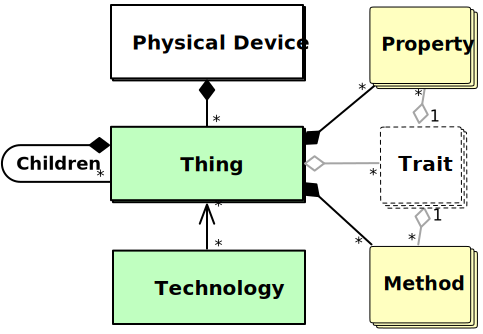

Splot Design Documentation
Splot is an exploratory effort to develop an object model and applicaiton protocol that allows IoT devices to be used in ways unconstrained by the imagination of the device manufacturer or software developer, with the goal of improving the long-term value of such devices.
Note: This document is a work-in-progress and is subject to change at any time.
Splot is not an official Google project.
Copyright © 2019 Google LLC
Licensed under the Apache License, Version 2.0 (the "License"); you may not use this file except in compliance with the License. You may obtain a copy of the License at
https://www.apache.org/licenses/LICENSE-2.0
Unless required by applicable law or agreed to in writing, software distributed under the License is distributed on an "AS IS" BASIS, WITHOUT WARRANTIES OR CONDITIONS OF ANY KIND, either express or implied. See the License for the specific language governing permissions and limitations under the License.
Introduction
An ongoing problem in the IoT industry is early unexpected obsolescence: there are many documented cases where shortly after a product’s release the manufacturer either got acquired, went out of business, or simply decided to no longer maintain the infrastructure required to support a product: resulting in all of the devices being rendered effectively useless. In some cases this results in significant financial burden if the company wants to maintain goodwill in the brand by buying-back the useless devices. In all cases it represents an additional electronic-waste disposal burden.
Even when the device is fully functional on a well-supported ecosystem, end-users may want to use their devices in ways that the manufacturer did not anticipate. For example, ZigBee Light-Link remote-controls are only capable of controlling things that describe themselves as ZigBee Light-Link lights—in general, you cannot repurpose such a controller to instead adjust your television volume, for example.
In much the same way that a manufacturer of power switches does not specify what kind of device it can power on or off, Splot represents an exploratory effort to improve the long-term value of IoT devices by allowing them to be used in ways not limited by the imagination of the device manufacturer or software developer. Stated more succinctly:
IoT device software should not need to know anything specific about other IoT devices in order to be configured to usefully interact.
This document elaborates on the implications of this precept as "Splot", along with all of the related pieces to turn it into a workable collection of standards.
"Splot" is a Polish noun meaning "weave" or "tangle".
Design Goals
An ideal IoT application technology would satisfy the following goals:
- Flexible enough to be considered relatively “future-proof”
- Automatable without requiring extra hardware or internet access
- Defined as an open standard with at least one open-source reference implementation
- Simple enough that can be implemented on highly-constrained devices
- Secure, honoring the principle of least privilege.
- Suitable for residential, commercial, and industrial environments
- Include proper support for groups, scenes, and smooth transitions (where appropriate)
Splot is an exploratory attempt to bridge these requirements into a single cohesive technology and application protocol with the following goals:
- Secure, low-latency monitoring and control of (potentially constrained) networked devices
- Elegant support for scenes, groups/rooms, and smooth transitions
- Expressive and reliable device-to-device automation
In addition satisfying these goals, the SOM was designed, to the extent practical, to express a superset of functionality commonly provided by other existing IoT protocols, making it reasonably efficient to monitor and control non-SOM-based using a SOM-based API. This feature allows for the straightforward implementation of adaptation layers and enables cross-protocol automation.
Terminology
The key words "MUST", "MUST NOT", "REQUIRED", "SHALL", "SHALL NOT", "SHOULD", "SHOULD NOT", "RECOMMENDED", "MAY", and "OPTIONAL" in this document are to be interpreted as described in RFC2119.
This specification makes use of the following terminology:
action : A behavior triggered by some criteria that manipulates a resource in the configured way.
group : A collection of things that can be controlled as though it were a single thing.
management application : An application on a computer, smart-phone, or the cloud, that provides a user-friendly interface for monitoring, controlling, configuring, and automating Things.
method : A named function/action that a thing can be directed to perform, optionally taking a set of named arguments and returning a value. Each method is defined by a trait.
property : A named value associated with a thing that can be fetched, monitored and/or controlled. Each property is defined by a trait.
resource : The underlying object identified by a URI.
section : Properties are categorized into sections, similar to how one might categorize files into folders. Each property belongs to a single section, of which there are three: state, config, and metadata.
SMCP : Abbreviation for Splot Monitoring and Control Protocol, an application protocol that is based on the SOM (Splot Object Model).
SOM : Abbreviation for Splot Object Model.
technology : WRITEME
thing : An abstraction of a physical or virtual mechanism, sensor, or automation. Physical devices can host one or more things.
trait : A named collection of related property and method definitions. Things implement properties and methods that are defined by traits.
trait-profile : A named collection of properties and/or methods that a thing can advertise itself as implementing. These properties and methods can belong to one or more traits.
UID : Unique ID. A short, administratively-assigned, opaque identifier that uniquely identifies a Thing in an administrative scope.
Splot Object Model
The Splot Object Model is a collection of interfaces for monitoring and controlling things. It defines the general mechanisms and nomenclature for how network-connected things can be described, configured, monitored, and automated.
Keep in mind that while the SOM informs the design of Splot-based APIs and protocols, it is only an object model: It defines vocabulary, concepts, and object relationships. It is not an IoT application protocol; it is a framework for describing and interacting with IoT devices in a uniform way.
The SOM-native application protocol, SMCP, is defined in a separate chapter, but other IoT application protocols can be adapted to be monitored, controlled, and automated in terms of the SOM.
Architecture

Breaking this down:
- A physical device can host one or more things.
- A thing can have multiple properties and methods, each defined by a trait.
- A thing can host other things that it owns (children).
- While not illustrated in the previous diagram, each child is associated with a single trait on its parent, in much the same way that properties and methods are.
Things
Things are the fundamental control surface objects in the SOM. Physical devices host one or more Things.
Things provide:
- Properties that can be monitored, changed, or mutated
- Methods that take named arguments and return values
- Child things (children) which it owns and manages
Some hypothetical examples of Things and their relationship to physical devices:
- A smart light bulb that hosts a single Thing that is used to control and monitor the state of the light bulb.
- A smart power strip that hosts one Thing per outlet, used to control the state of each outlet and monitor power usage.
- A proprietary wireless sensor gateway hosting one (or more) Things for each associated wireless sensor, used to monitor temperature and humidity.
- A device could have any number of automation primitives, with each one being a thing.
Properties
Properties are the primary mechanism by which a thing can be monitored and controlled. Each property has a value type associated with it. The types are roughly those defined by CBOR:
- Number (Integer or Floating-Point)
- Text String
- Byte String
- Boolean
- Array
- Map
- URI-Reference
The actual value of a property may be one of these types or null,
the meaning of which is outlined by the trait that defines the
property.
Each property has an identifier, which is a short string (typically four characters long) that uniquely identifies the property with its scope.
Sections
Sections organize properties in a thing based on their usage and intended purpose. There are three sections:
- State properties describe/control what the Thing is currently doing or recently done.
- Config properties control how the Thing works.
- Metadata properties describe what the Thing is and how it might behave, independently of what the current configuration or state is.
Properties in the state section are the only properties that can be saved in a Scene or smoothly transitioned from one value to another.
Each section is associated with a single character used to identify the section:
- "
s": State - "
c": Configuration - "
m": Metadata
Property Keys
Properties are uniquely identified by a tuple of the section,
trait-id, and property-id, which is called a property key.
Property keys are written as a string in the form of
<section-id>/<trait-id>/<property-id>; e.g.:
s/onof/v: On/off state value (boolean)s/levl/v: Level value (float)c/enrg/mxam: Maximum allowed amps (float)m/base/name: Administratively assigned name (String)
A convention of using four or fewer letters has been adopted in order to reduce packet sizes, but this is not a hard rule. Obviously longer, more descriptive identifiers would improve casual comprehension, but at the cost of wasted bytes.
Properties may be broadly described as being read-only, read-write, or write-only, although there are additional attributes.
Methods
Methods are a way to manipulate a thing in ways that would not translate well to being represented with properties. The most common example is for creating new child things, but the mechanism is defined to be open-ended.
Methods take a named set of arguments as input and are defined to output a single value or indicate an error. Arguments are identified by a short string rather than by their order. Arguments and return values share the same set of value types that are used by properties, with the addition that an method may return a direct reference to a child thing. (This is used to return created or updated child things).
Methods are defined by traits just like properties are. The trait defines what the named arguments are, what their types should be, which arguments are required, and what the method return type will be.
Just like properties, methods are scoped by trait. They have a special
section designated "f"(This scope gets double-duty in SMCP with also
handling child things, but I digress). The short-identifiers of the
scope, trait, and method are combined similarly to properties, except
that the second slash is instead a question mark:
f/scen?save: Save current state to a new or existing scenef/gmgr?create: Create a new group
Traits
Specific properties and methods are defined by Traits. A Thing can implement properties and methods from several traits. Children are also scoped to specific traits.
A Trait is a set of properties and methods that are related to a purpose. For example, the OnOff trait provides the concept of being on or off, whereas the Level trait provides the concept of a dimmer switch or volume knob. These traits expose distinct behaviors that are independent from the Light trait which provides additional properties for correlated color temperature and sRGB values, but none that are suitable substitutes for the properties provided by OnOff and Level: the Light trait is designed to be used alongside these traits.
Some traits, like the Scene trait, define children. In the case of the Scene trait, each child thing represents a scene that can be recalled, modified, or deleted. A "save" method is also provided by the trait to allow the current state to be saved to a new or existing scene.
Traits are scoped to be as general as practical so that they can be applied to many different sorts of things. For example, the Level trait could be applied to a light bulb to control dimming, or applied to a ceiling fan to control speed, or to a window controller to control how far open the window is.
Each trait is defined to have both a human-readable name (OnOff,
Level, Keychain), a short trait-id ("onof", "levl",
"keyc"), and a unique URI identifier.
Trait Definitions
Traits definitions are specified in a JSON format. This trait
definition can then be translated into either markdown documentation,
Rust, or Java using the som-trait-conv tool.
Splot provides the following collections of trait definitions:
- Core Traits (
core): Traits which are fundamental to the Splot Object Model. - Standard Traits (
std): Traits which represent behaviors which are common enough to be standardized. - Automation Traits (
auto): Traits related to automation. - Security Traits (
sec): Traits related to the Splot Security Model.
Children
A trait's definition can indicate if it has child things, and, if so, how those things behave and what traits the children themselves implement.
For example, the scene trait allows a thing to save the values of the properties in its state section and associating them with a scene-id. The scene itself is represented as a child thing that can be manipulated independently.
Each child thing can be identified by a combination of the trait identifier and a child-id.
For example, if I used f/scen?save to create a scene with a scene-id
(child-id) of evening, the resulting child would be identified by
the tuple (scen, evening).
The exact mechanism for how you reference children is implementation
specific, but in SMCP for example, it would be referenced as
f/scen/evening/, relative to the parent.
The nesting of child things is allowed.
Trait Profiles
A trait profile is a named, versioned set of required-to-implement traits and an associated list of required-to-implement properties and methods from those traits. When a thing indicates that it supports a given trait profile, it is promising that it fully supports all of the properties and methods that the trait profile requires.
Trait profiles provide a way for software to quickly classify the functionality of a thing and ensure that certain types of things have the appropriate minimal level of common functionality to ensure they meet user expectations.
For example, a trait profile for a "Dimmable Lamp" might require the
Base, OnOff, Level, Energy, and Light traits, additionally
requiring some additional subset of the optional properties from those
traits to be implemented. The trait profile for a "Full-Color Lamp"
would require the exact same traits but also include an expanded list
of required-to-implement properties from those traits. A thing can
implement more than one trait profile, and some trait profiles require
that other specific trait profiles also be supported.
Groups
A group is a collection of things (members) which can be controlled as a single thing.
Groups are always owned by a technology. Members of a group must be associated with that group's technology.
The state section of a group is special in that any operation performed on it will be applied to the state section of all of the group's members.
By comparison, the configuration and metadata sections belong to the group itself. Thus, it is not possible to change a configuration or metadata property across the members of a group in a single operation like you can with state properties.
The behavior of reading state properties on a group is currently undefined by the SOM and thus the behavior is technology-specific. This may change at some point.
Technologies
A Technology is a type of object that enables a software program to do one or more of the following fundamental operations:
- Discover new things
- Host things for other things/devices to use
- Manage groups, automation primitives, and security contexts
A Technology instance could be thought of as a Splot-colored window into the world of a specific IoT application protocol.
For example, using a SMCP-based technology would allow a software program to discover, monitor, and control SMCP-based devices. Likewise, using a ZigBee-based Technology instance will allow a software program to discover, monitor and control ZigBee-based devices, providing a SOM-compliant interface to the ZigBee world.
While not a fundamental SOM type, the concept of a Technology is nonetheless an important concept to understand since groups, automation primitives, security contexts, and UIDs are all technology-scoped.
The Things discovered using a Technology instance and things hosted by that Technology instance are in the same URL-space.
From a software perspective, a Thing is just an interface to an object. Consider, for example, a fake on/off switch that implemented the thing interface. It wouldn't need anything else to be usable within the process that created it.
Things that implement automation primitives are different. They need a window into the world around them because some of their properties contain URLs that they need to monitor and/or change. Thus, automation primitives cannot exist in a vacuum, instances are always be associated with a technology instance. Specifically, they need a way to perform REST operations on arbitrary URLs.
Group things are even more tightly related to technologies: they don't ideally just exist on one device, they exist across all devices that have things in them, and potentially many more.
Taking a thing that is discovered from one technology instance and then hosting that on a separate technology is called "bridging".
Automation
One of the key design goals for Splot was to support the use of in-band-configurable automation primitives, enabling complex device-to-device relationships that have no external dependencies once configured.
Automation primitives can act like virtual wires, making properties on different devices dependent on each other, or they can act as scheduled timers that trigger actions at programmable times of the week.
Additionally, since these automation primitives are defined in terms of simple JSON/CBOR values and REST-ful actions on URLs, they can even be used to automate devices which have a RESTful interface but don’t use the Splot Object Model.
Primitives
Splot Automation Primitives are themselves Things, meaning they can be created and then configured in-band just like any other Thing.
Splot currently defines three types of “standard” automation primitives:
- Pairings
- Rules
- Timers
Ultimately, the automation primitives described here are experimental. There is always room for improvement and changes in behavior should be expected until the protocol stabilizes.
Pairings
Pairings are automation primitives that connect two resources, which are referred to as the source and destination. Changes observed to the source resource can be automatically applied to the destination resource, and vise-versa.
In forward propagation, changes observed to the source are applied to the destination. In reverse propagation, changes observed to the destination are applied to the source. Both propagation modes can be enabled simultaneously, allowing for resource value synchronization.
In addition to basic value mirroring, two custom transforms can be specified: a forward transform that is applied to changes from the source to the destination, and a reverse transform that is applied to changes from the destination to the source. These transforms are written using the expression language outlined in (#sae).
All pairings implement the AutomationPairing trait, described in (#trait-automation-pairing).
Rules
Rules are actionable automation primitives that consist of one or more conditions. Each condition can evaluate to "true" or "false". A rule can be configured to trigger when ALL conditions match or when ANY condition matches.
A condition monitors a specific URI value and defines how that value should be interpreted in the form of a Splot Automation Expression, as described above. Similar to pairings, the previous value is pushed onto the stack before the current value: allowing for edge triggers.
Timers
Timers are actionable automation primitives that allow you to implement the following types of time-based actions:
- One-off timers
- Repeating timers
- Scheduled timers
The behavior of a timer is ultimately defined by two Splot Automation Expressions:
- Schedule
- Predicate
Evaluating the schedule expression yields the number of seconds to wait until the predicate expression should be evaluated. If the predicate expression evaluates to true then the action(s) are triggered. Otherwise, the schedule expression is re-evaluated and the timer resets.
While this is more than enough for one-off timers and repeating timers, it does not itself allow you to schedule events. To enable that, Splot Automation Expressions supports several operations for probing a real-time-clock:
c: The number of times this timer has fired since it was last reset.rtc.y: Pushes Gregorian year.rtc.dow: Pushes Day of week. 0-6. Monday is 0, Sunday is 6.rtc.dom: Pushes Day of month. Zero-based Integer, 0-30.rtc.tod: Pushes Time of day, in fractional hours. 0.000 - 23.999.rtc.moy: Pushes Current month. zero-based Integer, 0 = January, 11 = Decemberrtc.awm: Aligned week of month. Pushes Number of times this weekday has happened this month. zero-based Integer.rtc.wom: Pushes Week of month. zero-based Integer.rtc.woy: Pushes Week of year. zero-based Integer, 0-51. Week starts on monday.H>S: Convert hours to seconds.D>S: Convert days to seconds.
The combination of a schedule expression and a predicate expression allow for the evaluation of very complex schedules (like easter) even on constrained devices. The schedule expression is used to determine when to check the predicate, whereas the predicate is used to determine if it is indeed the right time.
For example, to schedule an event to happen at 1:30pm every second Wednesday of the month, you could use the following expressions:
- schedule:
"13.5 rtc.tod - 24 % H>S"(Seconds until the next 1:30pm) - predicate:
"2 rtc.dow == 1 rtc.awm == &&"(Is it the second Wednesday of this month?)
This will cause the predicate to be evaluated every day at 1:30pm. When the predicate finally evaluates to true on the second Wednesday of the month, the actions are triggered.
Actionable Primitives
Rules and Timers are both actionable automation primitives, meaning that they when either are "triggered" they invoke actions. The machinery and interface that performs these actions is identical between the two. When an actionable automation primitive is triggered, it performs zero or more "actions". You can think of an action as similar to a webhook.
An action is specified by the following important parameters:
- A URI. Required.
- A REST method (PUT, POST, DELETE, etc) to perform on that URI. Optional: defaults to POST.
- A body to pass along while performing the method. Optional: defaults to empty.
- An enumeration value that determines if the action should be evaluated synchronously or asynchronously, as well as what to do in the event of an error. Optional: defaults to asynchronous firing (later actions don't wait for this action to finish before firing).
- Security context information. Optional: defaults to no security context.
Splot Automation Expressions
Pairing transforms are specified using Splot Automation Expressions, a specialized postfix (Reverse polish notation) language that is expressed as a string. The language was designed to be expressive yet simple to implement on highly-constrained devices.
For pairing transformations, the value being transformed is initially pushed onto the stack and the last value on the stack after evaluation is the output fo the expression.
The syntax is somewhat similar to forth, but unlike forth all numeric values are considered floating-point.
For example, the following transform would apply x² to source values before they are applied to the destination:
"2 ^"(or"DUP *")
If the pairing was bidirectional, then the reverse transform for the above expression would be:
"0.5 ^"
In this case we are raising x to the power of 0.5, which reverses raising it to the power of two from the forward transform.
This example was fairly simple, but much more complex transforms are
possible. For example, the infix expression (cos(x/2 - 0.5) + 1)/2
would become "2 / 0.5 - COS 1 + 2 /". (Note that currently, the
trigonometric operations use turns instead of radians)
In cases where an expression is used on an input, the previous input
can be pushed on the stack using v_l. This allows for things like
edge detection and determining the direction of a change. For
convenience, the current input can also be pushed onto the stack using
v.
The ability to handle arrays and dictionaries is also specified. For example, imagine that we have a color light and a text display. Our goal is to display the approximate correlated color temperature (CCT) of the light on the text display in Kelvin. However, in this example, the color light only gives us the CIE xy chromaticity coordinates in the form of an array with two floating point values. We can start by creating a pairing between the CIE xy coordinates and the text display value. To get the right transformation expression, we first have to have the infix expression:
- CCT(x, y) = -449n³ + 3525n² - 6823.3n + 5520.33
- where n = (x − 0.332)/(y - 0.1858)
By using the POP operation to remove the last item from an array on
the stack and push that value onto the stack, we end up with the
following expression:
POP 0.1858 -
SWAP POP 0.3320 -
SWAP DROP SWAP /
-449 3525 -6823.3 5520.33 POLY3
Arrays can be built by pushing values onto the stack and invoking one of the array creation operators:
[]Pushes an empty array onto the stack.[1]Pops the last value off of the stack, puts it into an array, and pushes that array onto the stack.[2]Pops the last two values off of the stack, puts them into an array, and pushes that array onto the stack.[3]Pops the last three values off of the stack, puts them into an array, and pushes that array onto the stack.[4]Pops the last four values off of the stack, puts them into an array, and pushes that array onto the stack.
Dictionaries (json "objects") can also be read and written. The
following expression calculates the vector length for an input vector
specified as {"x":12,"y":14}:
:x GET DUP * SWAP :y GET DUP * SWAP DROP + 0.5 ^
A dictionary can be created by putting it together value-by-value. For example, the following expression takes an input of "turns" and converts that to a vector:
{} OVER COS :x PUT OVER SIN :y PUT
If you wanted to do something similar with arrays, you have two options:
[] OVER COS PUSH OVER SIN PUSHDUP COS SWAP SIN [2]
Automation Recipes
It is not expected that end users would directly configure automation primitives by hand---although they certainly could do that if they wanted to. The expected way is that you would have applications (either on your phone or in the cloud) that would configure and maintain these automation pairings for you. Such applications can store some metadata along with the automation primitives they are in charge of to help their software make sense of them. There are also properties where such applications are encouraged to include human-readable descriptions and comments.
Recipes are instructions that enable management applications to to create, manage, and update complex automation primitive chains. They describe the complex relationships between concrete things and automation-primitives required to implement arbitrary behaviors.
Examples of recipes might include:
- Press a button and cause all lights in a room to slowly fade down to a value of 0% with a color temperature of ~2000 K over a period of two minutes before turning off entirely.
- Use a motion sensor to automatically pause any ongoing lawn irrigation when motion is detected on the sidewalk, resuming 10 seconds after motion was last detected.
- Use multiple motion sensors to control the lights in a room.
- Automatically display "oven-on" notifications on smart displays near the kitchen when the oven is turned on, showing the current temperature in the notification and allowing the user to turn the oven off directly from the notification.
A recipe instance is a particular instantiation of a recipe. A recipe can be used multiple times to create multiple recipe instances. For example, you may want to use the "fading-down" recipe above in multiple rooms. In such a case, each room would have one independent instance of the recipe.
The exact recipe specification remains TBD, but here are the general design goals:
- Recipes are stored as JSON, in a format described by a JSON schema.
- Recipe instances should require no local state on the management application that cannot be reconstructed by examining the metadata and configuration of the automation primitives that the recipe instance created. In other words, any automation primitive created by a recipe should contain enough information to identify what recipe created it, what part it plays in the recipe, and what logical recipe instance it is associated with.
- Recipes should be upgradable and specify a logical way to transition an older recipe instance to a later version. Migration shouldn't be something users have to worry about.
Recipes will have the following structure:
- A unique identifier
- A version number which is incremented at each revision.
- A list of prerequisite things, each having:
- An internal identifier string.
- A list of required metadata fields.
- A list of configuration parameters which can be used to change the
behavior of the recipe:
- An internal identifier string.
- The type of the parameter
- String
- Direct Entry (with input validation)
- Pulldown-box
- Numbers (Real/Integer)
- Direct Entry (with input validation)
- Slider in range
- Pulldown-box
- Color
- Angle
- Duration (in seconds)
- Schedule (one-off, repeating, etc)
- Boolean checkbox
- String
- The default value of the parameter.
- A list of created things, each having:
- An internal identifier string.
- A list of property values to set, each could be a:
- Constant value
- Value derived from prerequisite thing URI
- Value derived from recipe configuration
- A list of version migration instructions, each having:
- Range of version numbers supported
- Mapping of changed parameters
- Mapping of changed prerequisite things
- Default values for new parameters (may be calculated dynamically)
Pulling it All Together
Let's say we've got a SMCP-compatible device that has two buttons, and we want to use it to control the brightness of an SMCP-compatible lightbulb. Here is what we want to happen from a user perspective:
- One button dims the light, the other button makes it brighter.
- Holding down a button causes the brightness to change continuously until the button is released.
First Attempt
There are several different ways to do this. One inefficient way that we can implement this uses two timers, two pairings, and a rule:
- Two timers, one for increasing brightness, one for decreasing brightness.
- Two pairings, connecting the button state to the two timers.
- One rule, triggering when one of the buttons is released and freezing any transition to the current value of the light.
Let's assume the following:
- The increase button state value is at
/3/s/onof/v - The decrease button state value is at
/4/s/onof/v - The light brightness value can be changed using
coap://light/1/s/levl/v?inc&d=0.4inc: causes the value to be incremented by the amount specified in the body.d=0.4: causes the value to be transitioned from the previous value over a period of 0.4 seconds.
- POSTing 0 to
coap://light/1/s/tran/dwill stop any transition in progress.
This is how the primitives would be configured:
-
Timer 1: Value Increment Timer
- schedule:
c 0 == IF 0.001 ELSE 0.4 ENDIF- 0.001 seconds for first firing, 0.4 seconds otherwise
- predicate: empty
- auto-reset: true
- action:
POST coap://light/1/s/levl/v?inc&d=0.4 0.1
- Note: This timer can be enabled/disabled via POSTing a boolean
to
/1/f/tmgr/1/s/enab/v
- schedule:
-
Timer 2: Value Decrement Timer
- schedule:
c 0 == IF 0.001 ELSE 0.4 ENDIF- 0.001 seconds for first firing, 0.4 seconds otherwise
- predicate: empty
- auto-reset: true
- action:
POST coap://light/1/s/levl/v?inc&d=0.4 -0.1
- Note: This timer can be enabled/disabled via POSTing a boolean
to
/1/f/tmgr/2/s/enab/v
- schedule:
-
Pairing 1: Increase Button Pairing
- source:
/3/s/onof/v - destination:
/1/f/tmgr/1/s/enab/v - push: true
- pull: false
- forward transform: empty
- source:
-
Pairing 2: Decrease Button Pairing
- source:
/4/s/onof/v - destination:
/1/f/tmgr/2/s/enab/v - push: true
- pull: false
- forward transform: empty
- source:
-
Rule 1: Stop Inc/Dec Timers Rule
- condition 1
- uri:
/3/s/onof/v - expression:
! v_l &&- infix: (v == false) && (v_l == true) (Condition is true only on the transition from true to false)
- uri:
- condition 2
- uri:
/4/s/onof/v - expression:
! v_l &&- infix: (v == false) && (v_l == true) (Condition is true only on the transition from true to false)
- uri:
- match: ANY
- action
POST coap://light/1/s/tran/d 0
- condition 1
When holds the increment button for half a second:
/3/s/onof/vtransitions fromfalsetotrue.- Pairing 1 notices and sets
/1/f/tmgr/1/s/enab/vto the same value,true. - Rule 1 notices and evaluates condition 1, which evaluates to
false: No action is triggered.
- Pairing 1 notices and sets
- Timer 1 has been enabled
- Clears the counter back to zero
- Evaluates the schedule to determine how long to wait: 0.001 seconds
- 0.001 seconds go by.
- Timer 1 schedule expires
- Evaluates predicate: true
- Triggers action
POST coap://light/1/s/levl/v?inc&d=0.4 0.1 - Increments counter
- Evaluates the schedule to determine how long to wait: 0.4 seconds
- Light starts incrementing by 10% over the next 0.4 seconds.
- 0.4 seconds go by.
- Timer 1 schedule expires
- Evaluates predicate: true
- Triggers action
POST coap://light/1/s/levl/v?inc&d=0.4 0.1 - Increments counter
- Evaluates the schedule to determine how long to wait: 0.4 seconds
- Light starts incrementing by another 10% over the next 0.4 seconds.
When someone lets go of the increment button:
/3/s/onof/vtransitions fromtruetofalse.- Pairing 1 notices and sets
/1/f/tmgr/1/s/enab/vto the same value,false. - Rule 1 notices and evaluates condition 1, which evaluates to
true:- Triggers action
POST coap://light/1/s/tran/d 0
- Triggers action
- Pairing 1 notices and sets
- Timer 1 has been disabled.
- Light stops any transition that is in progress.
Edge Cases
This does indeed work, but the fact that we have a timing schedule
of c 0 == IF 0.001 ELSE 0.4 ENDIF is rather ugly. More importantly,
it also hints at a small flaw: When the user presses both buttons at
the same time, the timers would be firing at the same time: producing
weird behavior until the user releases one of the buttons.
Second Attempt
We can fix this by replacing the two pairings with two rules. This
new approach would better handles such edge cases, since each button
press could be configured with actions to gracefully turn off the
opposing timer. It would also allow us to remove the 0.001 second
hack. Let's see what that approach would look like:
- Timer 1 is the same, except:
- schedule:
0.4
- schedule:
- Timer 2 is the same, except:
- schedule:
0.4
- schedule:
- Rule 1 is the same.
- Rule 2: Inc Button Pressed Rule
- condition 1
- uri:
/3/s/onof/v - expression:
v_l ! &&- infix: (v == true) && (v_l == false) (Condition is true only on the transition from false to true)
- uri:
- action
POST /1/f/tmgr/2/s/enab/v false(Synchronous)POST coap://light/1/s/levl/v?inc&d=0.4 0.1(Synchronous)POST /1/f/tmgr/1/s/enab/v true
- condition 1
- Rule 3: Dec Button Pressed Rule
- condition 1
- uri:
/4/s/onof/v - expression:
v_l ! &&- infix: (v == true) && (v_l == false) (Condition is true only on the transition from false to true)
- uri:
- action
POST /1/f/tmgr/1/s/enab/v false(Synchronous)POST coap://light/1/s/levl/v?inc&d=0.4 -0.1(Synchronous)POST /1/f/tmgr/2/s/enab/v true
- condition 1
Now whenever the user presses more than one button, the last button pressed will be the one in effect. Note that letting go of either button will still stop the transition, and if that's a problem you would need to split up Rule 1 into two rules instead of having Rule 1 do double duty.
Notice how the actions are explicitly marked as synchronous: we only want them to fire once the previous action has finished. This allows us to eliminate race conditions.
Splot Security Model
This document outlines the proposed overall architecture of the Splot Security Model (SSM), which defines the mechanisms for how the security of the Splot Object Model (SOM) can be managed in-band, as well as some hints about how native implementations of the Splot Object Model (like SMCP) can be secured on the wire.
The SSM provides:
- Framework and nomenclature for Splot Object Model security
- Decentralized, flexible mandatory access controls
- In-band Management via the Splot Object Model
Use Cases
There are generally three different types of interactions with Splot devices:
- Initial commissioning and device setup
- General-purpose monitoring/control (like from a dedicated app)
- Device-to-Device Automation
These use cases present significantly different requirements with respect to security:
- Initial commissioning requires a relatively simple (but secure) way to authenticate to the device when physical proximity can be proven.
- Monitoring/control should support delegation, adding/removing authorized devices, as well as differing levels of access.
- Device-to-device automation does not need any of this and instead require extremely narrow access.
Both monitoring/control and device-to-device require the use of secure multicast, but for different reasons. The SSM attempts to satisfy all of these use cases with a single security framework.
Design Goals
- Vendor neutral: Does not require a Google account to work
- Decentralized: Not dependent on internet access
- Implementable on constrained devices
- Enable long-lived behavioral associations between devices: The ability to survive device ownership changes while remaining secure
These are features which are informing the design and architecture of the Splot Security Model, but not yet formally defined:
- Delegation: Give temporary, limited, and revocable access to visitors without interacting with every device.
- Attestation: Allows devices to determine with high confidence if other devices are certified for a given purpose.
Terminology
Access Rule: A rule that defines what actions are allowed or disallowed for a given identity.
Attestation Certificate: A certificate that is used to strongly indicate that the given device meets certain requirements, such as being manufactured by a specific manufacturer or meeting certain regulatory requirements.
Certificate : A data structure that contains a public key and additional data.
Client : A device that sends requests to servers.
DTLS : Datagram Transport Layer Security, as defined in [RFC6347][https://tools.ietf.org/html/rfc6347].
Identity : A named set of mandatory access control rules on a given server. The scope of an identity is limited to the server.
Keychain : Mechanisms for managing a collection of keychain items.
Keychain Item : Either a shared secret, password, or certificate.
Keychain item identifier : A string uniquely identifying a keychain item on a given device.
OSCORE : A method for application-layer protection of the Constrained Application Protocol (CoAP) using CBOR Object Signing and Encryption (COSE), providing end-to-end protection between endpoints communicating using CoAP or CoAP-mappable HTTP. Defined in [RFC8613][https://tools.ietf.org/html/rfc8613].
PAKE : Password Authenticated Key Exchange. Describes any secure mechanism for establishing a strong, high-entropy shared key using a low-entropy password.
Password : A low-entropy secret that is shared between two parties to allow them to mutually authenticate to each other.
SPSKE : Single-Purpose Shared Key Establishment, a way for two devices to generate a shared key without the administrator knowing the key.
Security Session : A secure channel between a client and one or more servers
Server : A device that responds to requests from clients.
Shared Secret : A high-entropy secret that is shared amongst two or more devices that allow them to mutually authenticate to each other.
Architecture

The key takeaways from the diagram above are:
- Each device has...
- ...a Keychain, which manages Keychain Items.
- ... a set of Identities, which have Access Rules.
- A Keychain Item can be either a shared secret, password, or certificate.
- The Keychain, Keychain Items, Identities, and Access Rules are all Things, and can be managed in-band.
- Keychain Items can optionally reference a single Identity.
Layer Security Protocols
While technically an implementation detail, the Splot Security Model was written with two security layer protocols in mind: DTLS and OSCORE.
DTLS is intended to be used for security sessions authenticated with certificates or low-entropy passwords (supporting monitoring/control and initial commissioning). OSCORE is intended to be used to secure device-to-device interactions with high-entropy shared secrets. OSCORE is supported specifically to enable secure multicast device-to-device interactions.
Security Sessions
Secure requests sent from a client to one or more servers (and responses vise-versa) are performed within the context of a security session established between the devices.
Security sessions are secure channels between a client (who initiates the session and sends requests) and one or more servers (which can respond to the requests). The creation of a security session is always initiated by the client. If the server needs to send requests to the client, a new security session SHALL be established where the roles of the devices are reversed.
On the client side, a security session is uniquely identified by a tuple of the following information:
- The URL of the server endpoint
- The client keychain item used to authenticate the client to the server.
- A (possibly empty) set of acceptable client keychain items that the server can use to authenticate itself.
Any request from a client that needs a security session with the same three properties above can re-use any existing security session with those properties. Otherwise, a new security session MUST be established.
On the server side, a security session has the following properties:
- The identity to assume for any incoming request from the client, determined from the keychain item on the server that the client used to initially authenticate. This identity determines what actions the client may perform on the server using this security session.
- OPTIONAL: The set of keychain items that the client associated with this session has proven it satisfies. Used for attestation. First item is the one that determined the identity. Usually only contains one item. This may be empty if no authentication has taken place.
Identities
An identity is a named set of mandatory access control rules on a given server. The scope of an identity is limited to that server. Identities can be managed in-band as Things.
When establishing a session, a client uses the keychain item identifier to establish the session, *not the identity (which is purely a server-side concept). An identity can be associated with multiple keychain items, whereas a keychain item identifier identifies a single keychain item on a device.
Standard Identities
The security model has five pre-defined identities with standardized names and behaviors: Admin (NOTE: The name "root" was specifically avoided to prevent confusion about what an identity with such a name would be capable of.), Init, User, Read, and Anon.
admin— Used by the administrator of the device.adminmay read, write, or mutate any property in any section of any Thing on this device. May initiate software updates, manage the keychain, manage permissions, and manage connectivity. There are two actions that are not allowed: A factory reset MUST NOT be allowed. Also, this identity MUST NOT be allowed to read the secret share of any keychain item (writing is allowed).init— Special identity that can only be assumed when the device pairing code is used to authenticate. It assumes all of the permissions of “admin”, but can also perform a factory reset and/or read secret shares from items in the keychain. The ability to use this identity generally requires physical access to the device to put it into a particular state where you can authenticate using the pairing code. Intended only for initial commissioning and recovering administrative credentials. Unlike all other built-in identities, capabilities associated with this identity cannot be changed.user— For identities of the device.usermay read, write, or mutate all properties in the operational state of any Thing on this device, and may read any property from any Thing on this device (same exceptions asadmin). No access is granted to any other resource.read— For read-only identities of the device.readmay read any property in any section of any Thing on this device (same exceptions asadmin). No access is granted to any other resource.anon— Used when the client did not authenticate itself to the server. By default, all requests will be denied (can be overridden for certain circumstances).
Additional custom identities can be created with very limited scopes.
All standardized identities (except init) can have their ACLs
overridden.
Access Rules
The access rules for an identity allow access control decisions based on:
- REST Method (GET, PUT, POST, DELETE, etc)
- Path (Can start or end with a wildcard)
- Query (can match individual fields)
- Presence of CoAP observation/block-transfer options
- Match rules from another identity
Keychain
The keychain is the manager of cryptographic secrets and certificates, referred to as keychain items.
Keychain Items
A keychain item can be either a shared secret, password, or certificate (with or without a private key). Conceptually, keychain items are used to authenticate devices to each other, and in practice may also be simultaneously used for establishing cryptographic session keys.
All keychain items have at least the following attributes:
- Identifier used to identify the item during establishment of the security session.
- Human-readable Administrative label
- Object type (Shared Secret, Password, or Certificate)
- Associated local identity (Default: "anon")
- A flag indicating if the keychain item is enabled.
- A flag indicating if the keychain item is permanent.
- Lost secret recovery share
Ideally, the private/secret part of each keychain item would be stored in a secure element ("hardware backed").
Shared Secrets
Shared Secrets allow for mutual authentication of client and server. They are high-entropy and can be used directly in the calculation of a shared session key. These are typically used to secure device-to-device relationships and are associated with identities which are very limited in scope.
Passwords
Passwords also allow for mutual authentication of client and server. They are low-entropy, so they must be used with a PAKE algorithm to establish a strong shared session key. These items are generally only used for initial device configuration, but the security model defines them as a top-level keychain item type. From a high-level perspective, they behave identically to shared secrets.
Certificates
Certificates allow for one-way authentication between a server and a client. The exact implementation details are TBD, but they are expected to be based on X.509. Certificates are generally used for direct administration rather than for automation.
Conceptually, there are two types of certificate keychain items: those with private keys and those without. A certificate with a private key allows the device to authenticate itself to other devices. It is not used to authenticate other devices, and thus these keychain items are not typically associated with an identity other than "anon".
A certificate without a private key only allows the device to authenticate other devices that have a private key with this certificate or one signed by it.
For example, the administrator device (smart phone) has a self-signed admin certificate for devices in its domain. The administrator would install this admin certificate (without a private key) onto a managed device at commissioning and associate it with the "admin" identity. The administrator device can then be used to securely manage any devices configured in this way.
Permanent Keychain Items
There are currently three types of "permanent" keychain items that are used for device identification and initial commissioning:
Self-signed Certificate + Private Key
The only purpose of this keychain item is to uniquely identify the device. It is recalculated at factory reset to ensure privacy. This certificate is used by a server when the client wants to use a client certificate and doesn’t specify a key identifier for the server. This keychain item has an identifier of "self" if direct selection is desired.
Attestation Certificate + Private Key
This certificate is anonymized using batch keys, similar to FIDO tokens. It is not associated with an identity: It is used for additional attestation (for things like certification requirements) of an already established security session. The keychain identity of attestation certificates is largely defined by the manufacturer, but the following values are recommended:
-
"mfgr" for manufacturer attestation
-
"ecos" for ecosystem attestation
-
"reg" for regulatory attestation
Device Setup Code/Password
Security sessions created using this keychain item are always associated with the "init" identity. It shall only be used when physical proximity can be assured. This keychain item has an identifier of “init”. The value for this secret may be permanent (read off of a label on the device) or calculated dynamically (displayed after pressing a button).
Lost Secret Recovery
Keychain items can optionally support the ability for someone with physical access to n of m devices within a certain window of time to recover the underlying secret or private key.
Each keychain item has a nominally write-only field that is intended to be used to contain a share of the secret (calculated using libgfshare). The value of this field can only be read by the "init" identity, but can be written by the “admin” identity.
This allows for a new owner of a house to securely take over the network without performing a factory reset on every single device, as long as the new owner can physically manipulate at least n devices within the share secret reset period (generally months, but may be indefinite).
The shares are periodically recalculated, such as when a device is removed from the network or when a new device is added to the network.
Single-Purpose Shared Key Establishment
Single-Purpose Shared Key Establishment (SPSKE) is a mechanism for establishing a shared-secret keychain item on two or more devices in-band without an administrator ever learning the shared secret. This enables the establishment of long-lived automation relationships. This shared key can then be associated with a very limited single-purpose identity to allow devices to perform actions on each other without granting the ability to perform unauthorized actions. The intent is to enable a "capability-like" security model.
There are two variants: one for establishing a shared key between two devices, and one for establishing a shared key between a group of devices. The exact mechanism is TBD, but it would generally work like this:
- The administrator calculates a temporary shared secret, P.
- A "prepare-SPSKE" command is sent to Device A with the desired key
identifier and the value of P.
- Upon success, a location LOC is returned, which (if relative) is expanded to a fully specified URI. When the process is finished, this will be the address of the newly created keychain item for Device A. Next step must be completed within five minutes or LOC will become invalid.
- A "calc-SPSKE" command is sent to Device B with the desired key
identifier, the value of P, and the value of LOC.
- Upon success, a location to the newly created keychain item for Device B is returned. LOC can then be considered the location of the newly created keychain item for Device A.
- The administrator can then configure the newly created keychain items as appropriate, without ever learning the shared secret they contain.
Unresolved Issues
Secure Multicast Discovery
It would be desirable for someone with the appropriate credentials to be able to quickly discover devices that they can monitor/control. However, in order to avoid the case where the loss of a single device leads to the compromise of the entire network, monitoring/control credentials are typically asymmetric. While OSCORE does support secure multicast, it only works with a symmetric key.
Possible solutions:
- Have two keys: An asymmetric one for monitoring/control, and a
symmetric one for multicast discovery.
- Pros: Fast.
- Cons: Difficult to manage or revoke discovery key.
- Use unsecured multicast to discover devices which support SOM+SSM
and then follow up each one with a secure unicast discovery
request.
- Pros: Secure. Single certificate means easier key management.
- Cons: Slow when there are lots of devices. Must negotiate a new security session with each device.
Either approach could be adopted without any changes to the underlying security model.
Certificate Format
The certificate format is currently undefined, but assumed to ultimately be based on X.509. However, there could be benefits to having a compressed certificate format that expands to X.509, similar to Nest Weave Digital Certificates.
Splot Monitoring and Control Protocol
The Splot Monitoring and Control Protocol (SMCP) is an experimental RESTful machine-to-machine/thing-to-thing protocol designed for monitoring and controlling networked devices, as well as automating direct machine-to-machine interactions. SMCP can be used via either CoAP or HTTP, although CoAP is recommended.
SMCP was designed simultaneously with the Splot Object Model (SOM). Thus, it shares much of the same nomenclature: Things, Traits, Properties, and Methods are all fundamental concepts in SMCP. However, whereas the Splot Object Model defines the process and interfaces for how you can discover, manipulate, and automate things, SMCP defines what that can actually look like on the wire.
SMCP is still in the experimental and developmental stages, but SMCP is ultimately intended to be used for monitoring and controlling a large variety of device types:
- Consumer IoT equipment: Temperature sensors, smart light bulbs, smart buttons, and network cameras.
- Networking equipment: Smart switches, routers, and workstations.
- Industrial equipment: Vehicle traffic signals, street lights, power distribution management.
Introductory Example
This section introduces a strawman device and describes how it would be used in practice. It has been written in such a way as to allow you to jump right in without much context on how the SOM works, but I do recommend having a look at the Splot Object Model Introduction.
Since SMCP is a RESTful protocol, it uses a hierarchy reminiscent o that of a file system. Here is an example of what the hierarchy might look like for a simple smart light bulb:
* /.well-known/
* core <- RFC6690, for service discovery
* /1/ <- Feature Thing #1
* s/ <- State Section
* onof/v <- OnOff value (Boolean)
* levl/v <- Level value (Float)
* scen/sid <- Scene ID
* tran/d <- Transition Duration
* c/ <- Configuration Section
* lock/v <- Change Lock (Boolean)
* m/ <- Metadata Section
* base/turi <- Base Trait Version URI
* base/name <- Administrative Name for this Thing
* base/uid <- Administrative UID for this Thing
* base/sver <- Software version
* onof/turi <- OnOff Trait Version URI
* lock/turi <- Lock Trait Version URI
* levl/turi <- Level Trait Version URI
* lght/turi <- Light Trait Version URI
* lght/mire <- Native Correlated Color Temperature
* lght/mxbr <- Maximum Lumen Output
* lght/mdim <- Minimum Dimming Output
* scen/turi <- Scene Version URI
* tran/turi <- Transition Version URI
* f/ <- Methods/Children Section
* scen?save <- Scene Trait Save Method
* scen/[scene-id]/ <- Individual Scene Thing
* s/onof/v <- OnOff value for [scene-id]
* s/levl/v <- Level value for [scene-id]
* s/tran/d <- Transition duration for [scene-id]
* m/base/name <- Administrative name of the scene
Example REST Operations
Note that while the following examples use JSON, CBOR is the preferred encoding for SMCP. Support for JSON in SMCP is optional.
To get information about the state of this thing:
GET /1/s
...
2.05 CONTENT
{"onof":{"v":false},"levl":{"v":0.2},"tran":{"d":0}}
To get information on just the on/off status:
GET /1/s/onof/v
...
2.05 CONTENT
false
To turn on this light to full brightness (assuming it isn't locked):
POST /1/s
{"onof":{"v":true},"levl":{"v":1}}
...
2.04 CHANGED
To toggle this light on or off:
POST /1/s/onof/v?tog
...
2.04 CHANGED
To increase the perceived brightness of the light by around 10% of maximum:
POST /1/s/levl/v?inc
0.1
...
2.04 CHANGED
Change the light level to 100% brightness over the course of three seconds:
POST /1/s
{"levl":{"v":1},"tran":{"d":3}}
...
2.04 CHANGED
Significantly decrease the brightness of the light (by 0.5) over the course of 10 seconds:
POST /1/s/levl/v?inc&d=10
-0.5
...
2.04 CHANGED
To stop a transition currently in progress:
POST /1/s/tran/d
0
...
2.04 CHANGED
To save the current state as a scene identified as 'evening':
POST /1/f/scen?save
{"sid":"evening"}
...
2.01 CREATED /1/f/scen/evening/
To later see what the state for the evening scene is:
GET /1/f/scen/evening/s
...
2.05 CONTENT
{"onof":{"v":true},"levl":{"v":0.3}}
To recall evening scene state:
POST /1/s/scen/sid
"evening"
...
2.04 CHANGED
To delete the evening scene:
DELETE /1/f/scen/evening/
...
2.02 DELETED
Additional Bits
Now that we've covered some of the more simple sorts of interactions, we can add on to the hierarchy to add things like group support, device management, keychain management, etc:
* /g/ <- Group directory
* ?create <- Query for creating a new group
* [group-id]/ <- Individual Group Thing
* s/... <- Group Member State (changes state of all members)
* c/... <- Group Configuration (normal section)
* m/... <- Group Metadata (normal section)
* f/... <- Group Member Functions/Children (similar to state)
* /dev/ <- Device Management Thing
* m/ <- Metadata Section
* base/turi <- Base Trait Version URI
* base/name <- Administrative Name for this thing
* base/uid <- Administrative UID for this thing
* base/sver <- Software version
* prmg/turi <- Automation Pairing Manager Version URI
* rlmg/turi <- Automation Rule Manager Version URI
* keyc/turi <- Keychain Version URI
* gmgr/turi <- Group Manager Version URI
* f/ <- Methods/Children Section
* prmg/
* ?create <- Query to create automation pairings
* [pair-id]/ <- Path to the things for individual pairings
* rlmg/
* ?create <- Query to create automation rules
* [rule-id]/ <- Path to the things for individual rules
* keyc/
* ?create <- Query to create new keychain items
* [key-id]/ <- Path to the things for individual keychain itemsRemote Monitoring and Control
While not a part of the the original design consideration, the fact that SMCP is built on top of CoAP provides a straightforward path to enabling secure, low-latency remote monitoring and control.
There are a few different possible approaches, of which I will sketch out two:
- Local Reverse CoAP Proxy
- Direct DTLS tunnel from the device to the cloud service
In both cases, the connection from the remote phone to whatever server is being used would be secured with DTLS, but in the more secure version OSCORE would additionally be used inside of that tunnel to secure the messaging with end devices. This ensures that the access control rules remain in-force.
Local Reverse CoAP Proxy
In this case, devices would register themselves with a special reverse CoAP proxy on the local network. These devices would not themselves need internet access, but the reverse CoAP proxy would have internet access.
Once registered, the reverse proxy can forward remote requests it receives to devices on the local network. The remote requests themselves can reach the proxy in one of two ways:
- The local reverse proxy registers itself with a cloud service, which is either another reverse proxy or some proprietary protocol.
- The local reverse proxy uses Dynamic DNS and NAT-PMP/UPnP to become its own cloud server.
Pros and Cons
- Pros:
- Controlled devices (except, of course, the reverse proxy) can be firewalled off from direct internet access, reducing attack surface area.
- Remote control of groups is straightforward.
- Can use Dynamic DNS and NAT-PMP/UPnP to avoid use of cloud proxy server.
- Relatively off-the-shelf use of CoAP proxy servers.
- Cons:
- Requires some additional hardware on the local network.
Direct DTLS Tunnel
In this case, the device would be configured to register itself with a special cloud-based CoAP caching proxy server. This registration would happen using DTLS to secure the connection. Once the registration is complete, that DTLS tunnel is used to send requests back to the device.
Pros and Cons
- Pros:
- Very low-latency
- No additional hardware required
- Cons:
- Requires each device to send keep-alive packets to ensure firewall doesn't close the UDP port. (Not a problem for sleepy devices)
- Requires each device to have at least some limited amount of internet access. Should be heavily firewalled to limit attack surface area.
- Proper support for groups requires devices to keep cloud proxy informed about group membership, adding some mild complexity.
- Group control operations may "Popcorn".
Core Traits
The core Splot traits are traits that are fundamental to Splot. There are
currently just four:
Base: Descriptive metadata, Traps, Hidden flag, Context InfoGroup: All groups of things implement this trait.Scene: For things that support scenes.Transition: For things that support smooth state transitions.
Base Trait (base)
Base trait required by all top-level things.
| Attribute | Value |
|---|---|
| Id | tag:google.com,2018:m2m:traits:base:v1:v0#r0 |
| Short-Id | base |
| Has-Children | no |
It contains information about the model, manufacturer, and identifier, as well as administratively configurable properties like the administrative name, administrative id, and the hidden flag.
State Properties
| Name | Key | R | W | Req | Description |
|---|---|---|---|---|---|
| Trap | s/base/trap | X | ? | Current trap condition(s) |
s/base/trap : Trap
Current trap condition(s).
| Attribute | Value |
|---|---|
| Value Type | nullable text string |
| Flags | GET, OPT_SET, OBS, RESET, NO_TRANS, NO_MUTATE |
When not null, contains a string indicating the current error/trap condition. This property will automatically revert to null when the error/trap condition has been cleared, which depends on the type of device. This is used to indicate things like power overload, door obstructed, manual override, or battery too low.
Metadata Properties
| Name | Key | R | W | Req | Description |
|---|---|---|---|---|---|
| TraitURI | m/base/turi | X | X | The URI that uniquely identifies the specification used to implement this trait. | |
| Name | m/base/name | X | X | X | Administratively assigned human-readable name |
| UID | m/base/uid | X | ? | Administratively assigned unique identifier | |
| Permanent | m/base/perm | X | Determines if this thing is permanent and cannot be removed. | ||
| ProductName | m/base/prod | X | Localized Product Name | ||
| Model | m/base/modl | X | Model identifier, unique to the manufacturer. | ||
| Manufacturer | m/base/mfgr | X | Manufacturer name | ||
| SoftwareVersion | m/base/sver | X | Software version | ||
| Serial | m/base/seri | X | Manufacturer unique-identifier or serial-number | ||
| TraitProfiles | m/base/prof | X | Trait profiles supported by this thing | ||
| Hidden | m/base/hide | X | X | Hidden flag | |
| Context | m/base/cntx | X | X | Machine-readable dictionary containing information for the management applications. |
m/base/turi : TraitURI
The URI that uniquely identifies the specification used to implement this trait.
| Attribute | Value |
|---|---|
| Value Type | URI-reference |
| Flags | CONST, REQ |
m/base/name : Name
Administratively assigned human-readable name.
| Attribute | Value |
|---|---|
| Value Type | text string |
| Flags | REQ, RW |
After a factory reset, this is set to a descriptive default value by the manufacturer. This value does not need to be unique.
m/base/uid : UID
Administratively assigned unique identifier.
| Attribute | Value |
|---|---|
| Value Type | text string |
| Flags | GET, OPT_SET, OBS |
Identifies the function of the thing. Rules may reference this identifier instead of a direct path in order to make replacement easier. After a factory reset, the value of this field is set to a random UID. This value must be unique.
m/base/perm : Permanent
Determines if this thing is permanent and cannot be removed.
| Attribute | Value |
|---|---|
| Value Type | boolean |
| Flags | CONST |
True if this thing is permanent and cannot be deleted.
m/base/prod : ProductName
Localized Product Name.
| Attribute | Value |
|---|---|
| Value Type | map of text strings |
| Flags | CONST |
Contains a dictionary containing the localized names of the product in at least one language. The key to the dictionary is the locale code (like "en" or "jp"), and the value is the localized name for that locale.
m/base/modl : Model
Model identifier, unique to the manufacturer.
| Attribute | Value |
|---|---|
| Value Type | text string |
| Flags | CONST |
It identifies the specific model of the device hosting this thing. Note that this field is not for the marketing name: use ‘prod’ for that.
m/base/mfgr : Manufacturer
Manufacturer name.
| Attribute | Value |
|---|---|
| Value Type | text string |
| Flags | CONST |
Unique to the manufacturer. This property identifies the specific model of the device hosting this thing.
m/base/sver : SoftwareVersion
Software version.
| Attribute | Value |
|---|---|
| Value Type | text string |
| Flags | CONST |
This is often the version of the software running on the device, but in the case of a bridge may differ.
m/base/seri : Serial
Manufacturer unique-identifier or serial-number.
| Attribute | Value |
|---|---|
| Value Type | text string |
| Flags | CONST |
This is typically the thing index appended to the serial number of the device. The presence of this field is optional and may be omitted for privacy purposes.
m/base/prof : TraitProfiles
Trait profiles supported by this thing.
| Attribute | Value |
|---|---|
| Value Type | array containing text strings |
| Flags | CONST |
This property identifies which trait profiles this thing implements. Trait profiles define what the minimum implementation requirements are for specific types of functionality, such as lights.
Each trait profile specifies a unique string identifier (which is always a valid URI-reference) used to identify that specific version of the trait profile.
The first listed profile is intended to best describe the functionality of the thing, with subordinate profiles listed subsequently.
Hidden flag.
| Attribute | Value |
|---|---|
| Value Type | boolean |
| Flags | RW |
This property is a simple boolean flag indicating if this thing should be hidden from administrative views.
m/base/cntx : Context
Machine-readable dictionary containing information for the management applications.
| Attribute | Value |
|---|---|
| Value Type | URI-reference |
| Flags | RW |
This property is generally used by the management application to keep track of why certain things were created and how they fit into the bigger picture.
The following keys are specified:
rid: Recipe ID. Contains the URI-Reference identifying the recipe that created this thing.riid: Recipe Instance ID. A opaque string identifying the recipe instance this thing belongs to.ver: The version of the recipe instance that this thing was created with. Any time a recipe instance is changed, the version number is incremented and all things owned by that instance are updated with the new version. *role: The role this thing plays in the recipe. This opaque string is defined by the recipe.
Group Trait (grup)
Trait for groups of things.
| Attribute | Value |
|---|---|
| Id | tag:google.com,2018:m2m:traits:group:v1:v0#r0 |
| Short-Id | grup |
| Has-Children | no |
Config Properties
| Name | Key | R | W | Req | Description |
|---|---|---|---|---|---|
| Members | c/grup/memb | X | ? | URLs of group members | |
| GroupAddress | c/grup/addr | X | ? | Multicast Group Address | |
| Version | c/grup/vers | X | ? | Incremented whenever group configuration has changed. |
c/grup/memb : Members
URLs of group members.
| Attribute | Value |
|---|---|
| Value Type | array containing URI-references |
| Flags | GET, OPT_SET, OBS |
c/grup/addr : GroupAddress
Multicast Group Address.
| Attribute | Value |
|---|---|
| Value Type | text string |
| Flags | GET, OPT_SET |
c/grup/vers : Version
Incremented whenever group configuration has changed.
| Attribute | Value |
|---|---|
| Value Type | integer |
| Flags | GET, OPT_SET |
Metadata Properties
| Name | Key | R | W | Req | Description |
|---|---|---|---|---|---|
| TraitURI | m/grup/turi | X | X | The URI that uniquely identifies the specification used to implement this trait. |
m/grup/turi : TraitURI
The URI that uniquely identifies the specification used to implement this trait.
| Attribute | Value |
|---|---|
| Value Type | URI-reference |
| Flags | CONST, REQ |
Associated Constants
| Name | Value | Description |
|---|---|---|
PARAM_GROUP_ID | "gid" | Group ID |
Scene Trait (scen)
Support for Scenes.
| Attribute | Value |
|---|---|
| Id | tag:google.com,2018:m2m:traits:scene:v1:v0#r0 |
| Short-Id | scen |
| Has-Children | yes |
Provides scene support for a thing: named collections of state properties that can be easily recalled.
State Properties
| Name | Key | R | W | Req | Description |
|---|---|---|---|---|---|
| SceneId | s/scen/sid | X | X | X | Current scene identifier. |
s/scen/sid : SceneId
Current scene identifier.
| Attribute | Value |
|---|---|
| Value Type | nullable text string |
| Flags | REQ, RW, VOLATILE |
When written to, applies the scene to the state. When read, it will return the last state that was loaded if no changes to the state have been made since that time. Otherwise reading will return null.
Config Properties
| Name | Key | R | W | Req | Description |
|---|---|---|---|---|---|
| SceneIdPowerOn | c/scen/spor | X | X | Scene identifier to use at power-up. |
c/scen/spor : SceneIdPowerOn
Scene identifier to use at power-up.
| Attribute | Value |
|---|---|
| Value Type | nullable text string |
| Flags | EXPERIMENTAL, RW |
If not null, this property identifies the scene that will be automatically loaded at power-on or reset. Not all implementations support changing this value.
Metadata Properties
| Name | Key | R | W | Req | Description |
|---|---|---|---|---|---|
| TraitURI | m/scen/turi | X | X | The URI that uniquely identifies the specification used to implement this trait. |
m/scen/turi : TraitURI
The URI that uniquely identifies the specification used to implement this trait.
| Attribute | Value |
|---|---|
| Value Type | URI-reference |
| Flags | CONST, REQ |
Methods
| Key | Description |
|---|---|
f/scen?save | Saves the current state to the given SceneId. |
f/scen?save : Save
Saves the current state to the given SceneId.
| Arg | Req | Returns | Description |
|---|---|---|---|
sid | text string | Scene ID |
Returns URI for the created scene.
Transition Trait (tran)
Smooth value transitions.
| Attribute | Value |
|---|---|
| Id | tag:google.com,2018:m2m:traits:transition:v1:v0#r0 |
| Short-Id | tran |
| Has-Children | no |
This trait is implemented by things that support smooth transitions for some properties. Only properties in the state section can be transitioned smoothly.
State Properties
| Name | Key | R | W | Req | Description |
|---|---|---|---|---|---|
| Duration | s/tran/d | X | X | X | Transition duration, in seconds |
| Speed | s/tran/sp | X | X | Transition duration, in percentage of maximum speed |
s/tran/d : Duration
Transition duration, in seconds.
| Attribute | Value |
|---|---|
| Value Type | nullable real number |
| Flags | REQ, RW, VOLATILE, NO_TRANS |
When updated simultaneously with other state changes, it indicates the duration of the transition between the old state and the specified state. When read it indicates the time remaining in the current transition. The current transition can be halted by setting this to zero. Sometimes physical limitations will force a minimum duration that is longer than specified. The maximum value that is required to be supported is 604800, or one week. The resolution must be at or below one tenth of a second for durations of less than one hour.
s/tran/sp : Speed
Transition duration, in percentage of maximum speed.
| Attribute | Value |
|---|---|
| Value Type | nullable percentage (0.0-1.0) |
| Flags | EXPERIMENTAL, RW, VOLATILE, NO_TRANS |
This is an alternative to specifying the duration of a transition for Things where certain properties cannot be physically transitioned faster than a certain speed. The units of this property are a percentage of full speed. The implementation SHOULD allow this parameter to be adjusted as the transition is occurring. This property SHOULD NOT be implemented unless it makes sense for the underlying hardware.
Metadata Properties
| Name | Key | R | W | Req | Description |
|---|---|---|---|---|---|
| TraitURI | m/tran/turi | X | X | The URI that uniquely identifies the specification used to implement this trait. |
m/tran/turi : TraitURI
The URI that uniquely identifies the specification used to implement this trait.
| Attribute | Value |
|---|---|
| Value Type | URI-reference |
| Flags | CONST, REQ |
Standard Traits
The standard Splot traits are traits that represent common thing behaviors.
For example, lots of things have the ability to turn them on or off, so this
collection defines the OnOff trait.
OnOff: Trait for things that can be turned on or off.Level: Trait for things that have a continuous value between 0% and 100%, such as lights, shades, or speed controllers.Light: Trait that identifies lights, including full-color lights.Enabled: Trait for things that can be enabled or disabled.Energy: Trait for things that need to describe, keep track of, or provide limits on energy consumption.Battery: Trait for things that have batteries/cells.AmbientEnvironment: Trait for things that monitor temperature, pressure, humidity, and/or light level.
OnOff Trait (onof)
On/Off.
| Attribute | Value |
|---|---|
| Id | tag:google.com,2018:m2m:traits:on_off:v1:v0#r0 |
| Short-Id | onof |
| Has-Children | no |
Implemented by things that can be turned on or off, such as a light bulb or a power controller.
State Properties
| Name | Key | R | W | Req | Description |
|---|---|---|---|---|---|
| Value | s/onof/v | ? | ? | X | On/Off state as a boolean |
s/onof/v : Value
On/Off state as a boolean.
| Attribute | Value |
|---|---|
| Value Type | boolean |
| Flags | REQ, OPT_GET, OPT_SET, OBS |
On is true, off is false
Config Properties
| Name | Key | R | W | Req | Description |
|---|---|---|---|---|---|
| DurationOff | c/onof/doff | X | ? | Default duration (in seconds) for transitions from 'on' to 'off' | |
| DurationOn | c/onof/don | X | ? | Default duration (in seconds) for transitions from 'off' to 'on' | |
| SceneIdOn | c/onof/scon | X | ? | Power-on scene. | |
| IsLuminary | c/onof/lumi | X | ? | Flag for indicating if this thing is controlling a Luminary (light) |
c/onof/doff : DurationOff
Default duration (in seconds) for transitions from 'on' to 'off'.
| Attribute | Value |
|---|---|
| Value Type | real number |
| Flags | GET, OPT_SET, OBS |
Indicates the default duration (in seconds) when transitioning from the 'on' state to the 'off' state. This property is only present on things which also have the Transition trait.
c/onof/don : DurationOn
Default duration (in seconds) for transitions from 'off' to 'on'.
| Attribute | Value |
|---|---|
| Value Type | real number |
| Flags | EXPERIMENTAL, GET, OPT_SET, OBS |
Indicates the default duration (in seconds) when transitioning from the 'off' state to the 'on' state. This property is only present on things which also have the Transition trait.
c/onof/scon : SceneIdOn
Power-on scene.
| Attribute | Value |
|---|---|
| Value Type | text string |
| Flags | EXPERIMENTAL, GET, OPT_SET, OBS |
Indicates the scene to recall when the device is physically powered on or rebooted. On some types of devices this may be read-only. Only present on things that also implement the Scene trait.
c/onof/lumi : IsLuminary
Flag for indicating if this thing is controlling a Luminary (light).
| Attribute | Value |
|---|---|
| Value Type | boolean |
| Flags | EXPERIMENTAL, GET, OPT_SET, OBS |
This property allows a thing that controls a generic load (Like a smart power switch) to be explicitly identified as controlling a luminary (a light that is used for illumination). If this is set to true, this thing will be included in the “luminaries” group. If this thing implements the Luminary trait, then this thing is already assumed to be a luminary and this property MUST NOT be present.
Metadata Properties
| Name | Key | R | W | Req | Description |
|---|---|---|---|---|---|
| TraitURI | m/onof/turi | X | X | The URI that uniquely identifies the specification used to implement this trait. |
m/onof/turi : TraitURI
The URI that uniquely identifies the specification used to implement this trait.
| Attribute | Value |
|---|---|
| Value Type | URI-reference |
| Flags | CONST, REQ |
Level Trait (levl)
Level.
| Attribute | Value |
|---|---|
| Id | tag:google.com,2018:m2m:traits:level:v1:v0#r0 |
| Short-Id | levl |
| Has-Children | no |
This trait is implemented by things that support smooth transitions for some properties. Only properties in the state section can be transitioned smoothly.
State Properties
| Name | Key | R | W | Req | Description |
|---|---|---|---|---|---|
| Value | s/levl/v | ? | ? | X | Level value as a percentage |
s/levl/v : Value
Level value as a percentage.
| Attribute | Value |
|---|---|
| Value Type | percentage (0.0-1.0) |
| Flags | REQ, OPT_GET, OPT_SET, OBS |
The level is encoded as a floating-point value between 0.0 and 1.0. The exact meaning of this value is dependent on the type of device, but in general the value 0.0 represents one extreme state, the value 1.0 represents the opposite extreme state, and the values between those two represent a perceptually uniform distribution between those two states. When paired with the OnOff trait, the value 0.0 is intended to be closest to the off state that isn't actually off.
Some things to note:
- With the exception of physical actuators, perceptual uniformity is generally not linear. For example, reducing the light output by 50% will only reduce perceived light output by around 25%.
- If this trait is paired with an OnOff trait, then setting the level to 0.0 will likely behave differently than if the OnOff trait was turned off.
Metadata Properties
| Name | Key | R | W | Req | Description |
|---|---|---|---|---|---|
| TraitURI | m/levl/turi | X | X | The URI that uniquely identifies the specification used to implement this trait. |
m/levl/turi : TraitURI
The URI that uniquely identifies the specification used to implement this trait.
| Attribute | Value |
|---|---|
| Value Type | URI-reference |
| Flags | CONST, REQ |
Light Trait (lght)
Trait for things that are used for illumination.
| Attribute | Value |
|---|---|
| Id | tag:google.com,2018:m2m:traits:light:v1:v0#r0 |
| Short-Id | lght |
| Has-Children | no |
This trait is typically paired with the OnOff and Level traits.
State Properties
| Name | Key | R | W | Req | Description |
|---|---|---|---|---|---|
| Mode | s/lght/mode | X | ? | Current color system mode | |
| Effect | s/lght/efct | X | ? | Identifies the current special effect(s) in progress | |
| Mireds | s/lght/mire | X | ? | Current color temperature, in Mireds | |
| ChromaXy | s/lght/chro | X | ? | The ‘x’ and ‘y’ CIE chromaticity coordinates for the current color | |
| Whitepoint | s/lght/whpt | X | ? | The ‘x’ and ‘y’ CIE chromaticity coordinates for the current whitepoint | |
| sRGB | s/lght/sRGB | X | ? | sRGB values normalized to the range 0.0 to 1.0 |
s/lght/mode : Mode
Current color system mode.
| Attribute | Value |
|---|---|
| Value Type | text string |
| Flags | GET, OPT_SET |
Indicates the last color system used.
Can be one of the following values:
ct: Color TemperaturesRGBxy: CIE xyLCh: CIE LCh (EXPERIMENTAL)
This property is REQUIRED if the other implemented properties have side effects that would set this property to more than one specific value.
Internally, this property is used to determine which properties need to be stored in order to be able to properly recall the state later on, among other things.
s/lght/efct : Effect
Identifies the current special effect(s) in progress.
| Attribute | Value |
|---|---|
| Value Type | nullable text string |
| Flags | GET, OPT_SET, OBS |
The interpretation of this field is vendor-specific, with the following exceptions: null indicates no effect is in use, "colorcycle" indicates that the hue of the light is cycling through colors, and "candle" indicates that the light is emulating the flicker of a candle.
Vendors MAY implement other effects with unique string identifiers. If this property is implemented, m/lght/efct MUST also be implemented.
s/lght/mire : Mireds
Current color temperature, in Mireds.
| Attribute | Value |
|---|---|
| Value Type | real number |
| Flags | GET, OPT_SET, OBS |
Mireds are a perceptually-uniform way to indicate color temperature. This is an important property to ensure that transitions appear to be smooth and natural.
You can easily convert from Kelvin to Mireds using the following formula:
M = 1000000 / K
Because of the reciprocal relationship between Mireds and Kelvin, the exact same formula also works for converting Mireds to Kelvin.
Implementing this property is REQUIRED on color-temperature lights and RECOMMENDED on full-color lights.
When this property is written to, the following changes occur:
- The light is configured to emit "white" light at the given color temperature.
s/lght/mode(if implemented) changes to"ct"s/lght/whpt(if implemented) is updated to reflect the new values/lght/CIECbecomes zero.
If s/lght/mode is set to "ct", reading this property will yield the current color temperature of the white light that is being emitted. Otherwise, reading this property should yield either the correlated color temperature of the light that is being emitted or null.
s/lght/chro : ChromaXy
The ‘x’ and ‘y’ CIE chromaticity coordinates for the current color.
| Attribute | Value |
|---|---|
| Value Type | array containing real numbers |
| Flags | GET, OPT_SET, OBS |
This property is REQUIRED on full-color lights and OPTIONAL on color-temperature lights.
If the values written to this property are out of gamut, then the state when read will reflect an in-gamut approximation.
Writing to this property changes s/lght/mode to xy.
s/lght/whpt : Whitepoint
The ‘x’ and ‘y’ CIE chromaticity coordinates for the current whitepoint.
| Attribute | Value |
|---|---|
| Value Type | array containing real numbers |
| Flags | EXPERIMENTAL, GET, OPT_SET, OBS |
This property is REQUIRED on full-color lights and OPTIONAL on color-temperature lights.
If the values written to this property are out of gamut, then the state when read will reflect an in-gamut approximation.
Writing to this property changes s/lght/mode to xy.
s/lght/sRGB : sRGB
sRGB values normalized to the range 0.0 to 1.0.
| Attribute | Value |
|---|---|
| Value Type | nullable array containing percentages |
| Flags | EXPERIMENTAL, GET, OPT_SET, OBS |
Uses the real composite sRGB gamma curve. Setting this value will change the color of the light to match the contained values.
Implementing this property is RECOMMENDED on full-color lights.
If s/lght/whpt is supported, use that as the reference whitepoint, otherwise use D65.
The read value is NOT cropped to fit into the gamut of the device, but individual values MAY be limited to the range of 0.0-1.0 or reflect the loss of precision from conversion to the internal representations. If the gamut of the device is larger than the sRGB gamut, then values outside of the range of 0.0-1.0 MAY be allowed.
The value read SHOULD read as null if s/lght/mode is not sRGB, otherwise it reports the last value written.
Setting a value of all zeros MUST cause s/onof/v to become false. Setting a value with any non-zero component MUST cause the s/onof/v to become true.
Writing to this property changes s/lght/mode to sRGB.
Metadata Properties
| Name | Key | R | W | Req | Description |
|---|---|---|---|---|---|
| TraitURI | m/lght/turi | X | X | The URI that uniquely identifies the specification used to implement this trait. | |
| NativeMireds | m/lght/mire | X | The native correlated color temperature (in Mireds) | ||
| MaxMireds | m/lght/mxct | X | The maximum numerical value for s/lght/mire that this light supports. | ||
| MinMireds | m/lght/mnct | X | The minimum numerical value for s/lght/mire that this light supports. | ||
| SupportedEffects | m/lght/efct | X | Provides a list of supported special effects | ||
| Primaries | m/lght/prim | X | An array describing the primaries used on the light (up to six) in the CIE xyY colorspace. | ||
| Orientation | m/lght/ornt | X | ? | The physical orientation of the light. | |
| Function | m/lght/func | X | ? | Identifies the primary function of the light. |
m/lght/turi : TraitURI
The URI that uniquely identifies the specification used to implement this trait.
| Attribute | Value |
|---|---|
| Value Type | URI-reference |
| Flags | CONST, REQ |
m/lght/mire : NativeMireds
The native correlated color temperature (in Mireds).
| Attribute | Value |
|---|---|
| Value Type | real number |
| Flags | CONST |
This SHOULD be present on monochromatic lights, but MAY be present on full-color lights. In the case of full-color lights, this property may be missing entirely or set to represent the specific value of s/lght/mire that would generate the largest possible light output.
m/lght/mxct : MaxMireds
The maximum numerical value for s/lght/mire that this light supports.
| Attribute | Value |
|---|---|
| Value Type | real number |
| Flags | CONST |
m/lght/mnct : MinMireds
The minimum numerical value for s/lght/mire that this light supports.
| Attribute | Value |
|---|---|
| Value Type | real number |
| Flags | CONST |
m/lght/efct : SupportedEffects
Provides a list of supported special effects.
| Attribute | Value |
|---|---|
| Value Type | array containing text strings |
| Flags | CONST |
m/lght/prim : Primaries
An array describing the primaries used on the light (up to six) in the CIE xyY colorspace.
| Attribute | Value |
|---|---|
| Value Type | array containing arrays containing real numbers |
| Flags | CONST |
Each primary is described by a three-element array that contains the x, y, and Y values respectively for the primary. The Y component is normalized to where the maximum brightness of the light is Y=1.0.
m/lght/ornt : Orientation
The physical orientation of the light.
| Attribute | Value |
|---|---|
| Value Type | integer |
| Flags | GET, OPT_SET |
0: unspecified, 1: omnidirectional, 2: downlight, 3:uplight, 4: sidelight
m/lght/func : Function
Identifies the primary function of the light.
| Attribute | Value |
|---|---|
| Value Type | integer |
| Flags | GET, OPT_SET |
0: unspecified, 1: functional/illuminative, 2: decorative, 3: informative
Associated Constants
| Name | Value | Description |
|---|---|---|
EFFECT_COLORCYCLE | "colorcycle" | Color-cycle special effect. |
EFFECT_CANDLE | "candle" | Candle special effect. |
MODE_COLOR_TEMP | "ct" | Color temperature light mode. |
MODE_SRGB | "sRGB" | sRGB light mode. |
MODE_CIE_XY | "xy" | CIE xy light mode. |
MODE_CIE_LCH | "LCh" | CIE LCh light mode. |
ORIENTATION_UNSPECIFIED | 0 | The orientation of this light is unspecified. |
ORIENTATION_OMNIDIRECTIONAL | 1 | This light illuminates in all directions. |
ORIENTATION_DOWNLIGHT | 2 | This light illuminates downward. |
ORIENTATION_UPLIGHT | 3 | This light illuminates upward. |
ORIENTATION_SIDELIGHT | 4 | This light illuminates to the side. |
FUNCTION_UNSPECIFIED | 0 | |
FUNCTION_ILLUMINATIVE | 1 | The primary purpose of this light is illumination. |
FUNCTION_DECORATIVE | 2 | This light is decorative. |
FUNCTION_INFORMATIVE | 3 | The state of this light helps to inform the viewer. |
Enabled Trait (enab)
Enabled/Disabled.
| Attribute | Value |
|---|---|
| Id | tag:google.com,2018:m2m:traits:enabled:v1:v0#r0 |
| Short-Id | enab |
| Has-Children | no |
Implemented by things that can be configured as enabled or disabled.
Config Properties
| Name | Key | R | W | Req | Description |
|---|---|---|---|---|---|
| Value | c/enab/v | X | X | X | Enabled/Disabled state as a boolean |
c/enab/v : Value
Enabled/Disabled state as a boolean.
| Attribute | Value |
|---|---|
| Value Type | boolean |
| Flags | REQ, GET, SET, OBS |
Enabled is true, Disabled is false
Metadata Properties
| Name | Key | R | W | Req | Description |
|---|---|---|---|---|---|
| TraitURI | m/enab/turi | X | X | The URI that uniquely identifies the specification used to implement this trait. |
m/enab/turi : TraitURI
The URI that uniquely identifies the specification used to implement this trait.
| Attribute | Value |
|---|---|
| Value Type | URI-reference |
| Flags | CONST, REQ |
Energy Trait (enrg)
Energy.
| Attribute | Value |
|---|---|
| Id | tag:google.com,2018:m2m:traits:energy:v1:v0#r0 |
| Short-Id | enrg |
| Has-Children | no |
The Energy trait contains properties that relate to the energy consumption of a device. A Thing would rarely implement all of the described properties: only the relevant properties would be implemented.
State Properties
| Name | Key | R | W | Req | Description |
|---|---|---|---|---|---|
| Watts | s/enrg/watt | X | Instantaneous power draw, measured in watts. | ||
| Amps | s/enrg/amps | X | Instantaneous power draw, measured in amps. | ||
| Volts | s/enrg/volt | X | Instantaneous electric potential, measured in volts. | ||
| VoltAmps | s/enrg/voam | X | Apparent instantaneous power draw, measured in volt-amps. | ||
| PowerFactor | s/enrg/pwft | X | The instantaneous measured power factor of the load. Unitless. | ||
| Energy | s/enrg/enrg | X | The accumulated power (energy) used over time by this thing, measured in watt-hours. |
s/enrg/watt : Watts
Instantaneous power draw, measured in watts.
| Attribute | Value |
|---|---|
| Value Type | real number |
| Flags | GET, OBS |
Unlike the property volt-amps, this property takes into consideration power factor when measuring AC.
s/enrg/amps : Amps
Instantaneous power draw, measured in amps.
| Attribute | Value |
|---|---|
| Value Type | real number |
| Flags | GET, OBS |
s/enrg/volt : Volts
Instantaneous electric potential, measured in volts.
| Attribute | Value |
|---|---|
| Value Type | real number |
| Flags | GET, OBS |
s/enrg/voam : VoltAmps
Apparent instantaneous power draw, measured in volt-amps.
| Attribute | Value |
|---|---|
| Value Type | real number |
| Flags | GET, OBS |
Note that this is literally the volts multiplied by the amps, so this will differ if the power factor is anything other than 1.0. Only really meaningful when measuring AC.
s/enrg/pwft : PowerFactor
The instantaneous measured power factor of the load. Unitless.
| Attribute | Value |
|---|---|
| Value Type | real number |
| Flags | GET, OBS |
Only meaningful when measuring AC.
s/enrg/enrg : Energy
The accumulated power (energy) used over time by this thing, measured in watt-hours.
| Attribute | Value |
|---|---|
| Value Type | real number |
| Flags | GET, OBS, RESET |
If this Thing allows this value to be reset, it can be reset by setting its value to zero or null. Setting to any other value MUST fail.
Config Properties
| Name | Key | R | W | Req | Description |
|---|---|---|---|---|---|
| LimitMaxWatts | c/enrg/mxwt | X | ? | The maximum real power that the load is allowed to draw before being automatically shutting down. | |
| LimitMaxVoltAmps | c/enrg/mxva | X | ? | The maximum apparent power (volt-amps) that the load is allowed to draw before being automatically shutting down. | |
| LimitMaxVolts | c/enrg/mxvo | X | ? | The voltage above which the load is automatically shut down. | |
| LimitMinVolts | c/enrg/mnvo | X | ? | The voltage below which the load is automatically shut down. | |
| LimitMaxAmps | c/enrg/mxam | X | ? | The maximum current that the load is allowed to draw before the load is automatically shut down. |
c/enrg/mxwt : LimitMaxWatts
The maximum real power that the load is allowed to draw before being automatically shutting down.
| Attribute | Value |
|---|---|
| Value Type | nullable real number |
| Flags | GET, OPT_SET, OBS |
Set to null to disable. This property requires that the OnOff trait also be supported. When tripped, s/base/trap is set to [TRAP_MAX_WATTS] until the condition is reset by turning the load on again.
c/enrg/mxva : LimitMaxVoltAmps
The maximum apparent power (volt-amps) that the load is allowed to draw before being automatically shutting down.
| Attribute | Value |
|---|---|
| Value Type | nullable real number |
| Flags | GET, OPT_SET, OBS |
Set to null to disable. This property requires that the OnOff trait also be supported. When tripped, s/base/trap is set to [TRAP_MAX_VOLT_AMPS] until the condition is reset by turning the load on again.
c/enrg/mxvo : LimitMaxVolts
The voltage above which the load is automatically shut down.
| Attribute | Value |
|---|---|
| Value Type | nullable real number |
| Flags | GET, OPT_SET, OBS |
Set to null to disable. This property requires that the OnOff trait also be supported. When tripped, s/base/trap is set to [TRAP_MAX_VOLTS] until the condition is reset by turning the load on again.
c/enrg/mnvo : LimitMinVolts
The voltage below which the load is automatically shut down.
| Attribute | Value |
|---|---|
| Value Type | nullable real number |
| Flags | GET, OPT_SET, OBS |
Set to null to disable. This property requires that the OnOff trait also be supported. When tripped, s/base/trap is set to [TRAP_MIN_VOLTS] until the condition is reset by turning the load on again.
c/enrg/mxam : LimitMaxAmps
The maximum current that the load is allowed to draw before the load is automatically shut down.
| Attribute | Value |
|---|---|
| Value Type | nullable real number |
| Flags | GET, OPT_SET, OBS |
Set to null to disable. This property requires that the OnOff trait also be supported. When tripped, s/base/trap is set to [TRAP_MAX_AMPS] until the condition is reset by turning the load on again.
Metadata Properties
| Name | Key | R | W | Req | Description |
|---|---|---|---|---|---|
| TraitURI | m/enrg/turi | X | X | The URI that uniquely identifies the specification used to implement this trait. | |
| MaxWatts | m/enrg/mxwt | X | The maximum power that this thing is capable of drawing. | ||
| MaxAmps | m/enrg/mxam | X | The maximum current that this thing is capable of drawing. |
m/enrg/turi : TraitURI
The URI that uniquely identifies the specification used to implement this trait.
| Attribute | Value |
|---|---|
| Value Type | URI-reference |
| Flags | CONST, REQ |
m/enrg/mxwt : MaxWatts
The maximum power that this thing is capable of drawing.
| Attribute | Value |
|---|---|
| Value Type | real number |
| Flags | CONST |
m/enrg/mxam : MaxAmps
The maximum current that this thing is capable of drawing.
| Attribute | Value |
|---|---|
| Value Type | real number |
| Flags | CONST |
Associated Constants
| Name | Value | Description |
|---|---|---|
TRAP_MAX_WATTS | "energy-max-watts" | The real power of the load exceeded the value specified by c/enrg/mxwt. |
TRAP_MAX_VOLT_AMPS | "energy-max-volt-amps" | The apparent power of the load exceeded the value specified by c/enrg/mxva. |
TRAP_MAX_VOLTS | "energy-max-volts" | The voltage exceeded the value specified by c/enrg/mxvo. |
TRAP_MIN_VOLTS | "energy-min-volts" | The voltage was lower than the value specified by c/enrg/mnvo. |
TRAP_MAX_AMPS | "energy-max-amps" | The current being drawn by the load exceeded the value specified by c/enrg/mxam. |
Battery Trait (batt)
Battery trait for things which are backed by a battery.
| Attribute | Value |
|---|---|
| Id | tag:google.com,2018:m2m:traits:battery:v1:v0#r0 |
| Short-Id | batt |
| Has-Children | no |
All of the properties in this trait are optional, but some properties have defined relationships with other properties that, if present, should be maintained.
Some Things may simply adopt this trait and implement none of the properties simply to indicate that it is battery-powered. Others might only want to indicate if the battery is low, but offer no additional information about the charge level or capacity.
On the other hand, some things might implement most of these properties, providing a rich amount of detail on the overall state and health of the battery.
State Properties
| Name | Key | R | W | Req | Description |
|---|---|---|---|---|---|
| ChargeRemaining | s/batt/vpct | X | Remaining battery charge, as a percentage. | ||
| EnergyRemaining | s/batt/vnrg | X | Energy remaining, in milliwatt-hours. | ||
| NeedsService | s/batt/sreq | X | X | Battery service-needed indicator. | |
| ChargeState | s/batt/stat | X | Rechargable battery state | ||
| CapacityRemaining | s/batt/rcap | X | Capacity of the battery currently, relative to factory design capacity. | ||
| ChargeCycles | s/batt/cycl | X | Total number of battery recharge cycles. | ||
| CellVoltage | s/batt/celV | X | The voltages of the individual cells (or banks of cells) in the battery. |
s/batt/vpct : ChargeRemaining
Remaining battery charge, as a percentage.
| Attribute | Value |
|---|---|
| Value Type | percentage (0.0-1.0) |
| Flags | GET, OBS |
This field is optional, but highly recommended. If implemented, the value of this field is defined to be the following:
- Primary/Nonrechargable:
energyRemainingdivided byenergyCapacity - Secondary/Rechargeable:
energyRemainingdivided by the product ofcapacityRemainingandenergyCapacity.
s/batt/vnrg : EnergyRemaining
Energy remaining, in milliwatt-hours.
| Attribute | Value |
|---|---|
| Value Type | real number |
| Flags | GET, OBS |
If implemented, the value of this field is defined to be the following:
- Primary/Nonrechargable: The product of
chargeRemainingandenergyCapacity, - Secondary/Rechargeable: The product of
chargeRemainingandcapacityRemainingandenergyCapacity.
s/batt/sreq : NeedsService
Battery service-needed indicator.
| Attribute | Value |
|---|---|
| Value Type | boolean |
| Flags | REQ, GET, OBS |
True if the battery needs to be serviced, false otherwise. For example, this would become "true" if the battery was considered low.
s/batt/stat : ChargeState
Rechargable battery state.
| Attribute | Value |
|---|---|
| Value Type | text string |
| Flags | GET, OBS |
String describing the current state of the battery:
charged: Battery is fully charged. Connected to external power.charging: Battery is currently charging from external power.discharging: Battery is discharging normally.low: Battery is discharging but little power remains.disconnected: Battery has been disconnected, power being provided externally.trouble: Something is wrong with the battery or charging system.
s/batt/rcap : CapacityRemaining
Capacity of the battery currently, relative to factory design capacity.
| Attribute | Value |
|---|---|
| Value Type | percentage (0.0-1.0) |
| Flags | GET, OBS |
Only used for rechargeable batteries. This is a ratio of the current maximum capacity of the battery versus the maximum capacity of the battery when it was new.
s/batt/cycl : ChargeCycles
Total number of battery recharge cycles.
| Attribute | Value |
|---|---|
| Value Type | real number |
| Flags | GET, OBS |
Only used for rechargeable batteries.
s/batt/celV : CellVoltage
The voltages of the individual cells (or banks of cells) in the battery.
| Attribute | Value |
|---|---|
| Value Type | array containing arrays containing real numbers |
| Flags | GET, OBS |
This can be used to determine the general health of the battery pack.
Metadata Properties
| Name | Key | R | W | Req | Description |
|---|---|---|---|---|---|
| EnergyCapacity | m/batt/enrg | X | The factory design energy capacity of the battery when new and fully charged, in milliwatt-hours. | ||
| NominalBatteryVoltage | m/batt/volt | X | The nominal voltage of the battery. | ||
| NominalCellVoltage | m/batt/celV | X | The nominal voltage of a cell in the battery. | ||
| CellCount | m/batt/ccnt | X | The number of cells in the battery. | ||
| Rechargable | m/batt/rech | X | Indicates if the battery is rechargeable or not. |
m/batt/enrg : EnergyCapacity
The factory design energy capacity of the battery when new and fully charged, in milliwatt-hours.
| Attribute | Value |
|---|---|
| Value Type | integer |
| Flags | GET |
The maximum energy capacity value is around 2 megawatt-hours.
m/batt/volt : NominalBatteryVoltage
The nominal voltage of the battery.
| Attribute | Value |
|---|---|
| Value Type | real number |
| Flags | GET |
m/batt/celV : NominalCellVoltage
The nominal voltage of a cell in the battery.
| Attribute | Value |
|---|---|
| Value Type | real number |
| Flags | GET |
m/batt/ccnt : CellCount
The number of cells in the battery.
| Attribute | Value |
|---|---|
| Value Type | integer |
| Flags | GET |
m/batt/rech : Rechargable
Indicates if the battery is rechargeable or not.
| Attribute | Value |
|---|---|
| Value Type | boolean |
| Flags | GET |
Associated Constants
| Name | Value | Description |
|---|---|---|
CHARGE_STATE_CHARGED | "charged" | Battery is fully charged. Connected to external power. |
CHARGE_STATE_CHARGING | "charging" | Battery is currently charging from external power. |
CHARGE_STATE_DISCHARGING | "discharging" | Battery is discharging normally. |
CHARGE_STATE_LOW | "low" | Battery is discharging but little power remains. |
CHARGE_STATE_DISCONNECTED | "disconnected" | Battery has been disconnected, power being provided externally. |
CHARGE_STATE_TROUBLE | "trouble" | Something is wrong with the battery or charging system. |
AmbientEnvironment Trait (aenv)
Trait for measuring ambient temperature, pressure, humidity, and light level.
| Attribute | Value |
|---|---|
| Id | tag:google.com,2018:m2m:traits:ambient-environment:v1:v0#r0 |
| Short-Id | aenv |
| Has-Children | no |
This would typically be used by environmental sensors.
State Properties
| Name | Key | R | W | Req | Description |
|---|---|---|---|---|---|
| Pressure | s/aenv/pres | X | Ambient air pressure. Units TBD. | ||
| Temperature | s/aenv/temp | X | Ambient air temperature, in °C | ||
| Humidity | s/aenv/humi | X | Relative ambient humidity | ||
| LightLevel | s/aenv/temp | X | Ambient light level. Units TBD. |
s/aenv/pres : Pressure
Ambient air pressure. Units TBD.
| Attribute | Value |
|---|---|
| Value Type | real number |
| Flags | GET, OBS |
s/aenv/temp : Temperature
Ambient air temperature, in °C.
| Attribute | Value |
|---|---|
| Value Type | real number |
| Flags | GET, OBS |
s/aenv/humi : Humidity
Relative ambient humidity.
| Attribute | Value |
|---|---|
| Value Type | percentage (0.0-1.0) |
| Flags | GET, OBS |
Units TBD.
s/aenv/temp : LightLevel
Ambient light level. Units TBD.
| Attribute | Value |
|---|---|
| Value Type | real number |
| Flags | GET, OBS |
Metadata Properties
| Name | Key | R | W | Req | Description |
|---|---|---|---|---|---|
| TraitURI | m/aenv/turi | X | X | The URI that uniquely identifies the specification used to implement this trait. |
m/aenv/turi : TraitURI
The URI that uniquely identifies the specification used to implement this trait.
| Attribute | Value |
|---|---|
| Value Type | URI-reference |
| Flags | CONST, REQ |
Button Trait (bttn)
A button that can be pressed.
| Attribute | Value |
|---|---|
| Id | tag:google.com,2018:m2m:traits:button:v1:v0#r0 |
| Short-Id | bttn |
| Has-Children | no |
State Properties
| Name | Key | R | W | Req | Description |
|---|---|---|---|---|---|
| Value | s/bttn/v | X | ? | X | Button State |
| PressCount | s/bttn/c_dn | X | X | The number of times this button has been pressed. | |
| ReleaseCount | s/bttn/c_up | X | X | The number of times this button has been released. | |
| Last | s/bttn/last | X | The number of seconds ago that this button was pressed or released. |
s/bttn/v : Value
Button State.
| Attribute | Value |
|---|---|
| Value Type | boolean |
| Flags | REQ, GET, OPT_SET, OBS |
true while the button is pressed, false while the button is released.
s/bttn/c_dn : PressCount
The number of times this button has been pressed.
| Attribute | Value |
|---|---|
| Value Type | integer |
| Flags | REQ, GET, RESET, OBS |
This count may be reset by setting it to zero. The count is not preserved across power cycles.
s/bttn/c_up : ReleaseCount
The number of times this button has been released.
| Attribute | Value |
|---|---|
| Value Type | integer |
| Flags | REQ, GET, RESET, OBS |
This count may be reset by setting it to zero. The count is not preserved across power cycles.
s/bttn/last : Last
The number of seconds ago that this button was pressed or released.
| Attribute | Value |
|---|---|
| Value Type | integer |
| Flags | GET, NO_SET, OBS, VOLATILE |
This value is not cacheable. Observing it will only indicate when the value is reset to zero.
Metadata Properties
| Name | Key | R | W | Req | Description |
|---|---|---|---|---|---|
| TraitURI | m/bttn/turi | X | X | The URI that uniquely identifies the specification used to implement this trait. |
m/bttn/turi : TraitURI
The URI that uniquely identifies the specification used to implement this trait.
| Attribute | Value |
|---|---|
| Value Type | URI-reference |
| Flags | CONST, REQ |
Presence Trait (pres)
Detects presence.
| Attribute | Value |
|---|---|
| Id | tag:google.com,2018:m2m:traits:presence:v1:v0#r0 |
| Short-Id | pres |
| Has-Children | no |
Implemented by things that can detect the presence of someone, such as motion sensors and pressure mats.
State Properties
| Name | Key | R | W | Req | Description |
|---|---|---|---|---|---|
| Value | s/pres/v | X | ? | X | Presence Detected |
| Count | s/pres/c | X | X | Trip Count | |
| Last | s/pres/last | X | The number of seconds ago that presence was last detected. |
s/pres/v : Value
Presence Detected.
| Attribute | Value |
|---|---|
| Value Type | boolean |
| Flags | REQ, GET, OPT_SET, OBS |
true while presence is detected, false otherwise.
The presence signal is generally momentary in nature, flipping back and forth between detected and not-detected as the sensor detects movement.
s/pres/c : Count
Trip Count.
| Attribute | Value |
|---|---|
| Value Type | integer |
| Flags | REQ, GET, RESET, OBS |
This count may be reset by setting it to zero. The count is not preserved across power cycles.
s/pres/last : Last
The number of seconds ago that presence was last detected.
| Attribute | Value |
|---|---|
| Value Type | integer |
| Flags | GET, NO_SET, OBS, VOLATILE |
This value is not cacheable. Observing it will only indicate when the value is reset to zero.
Metadata Properties
| Name | Key | R | W | Req | Description |
|---|---|---|---|---|---|
| TraitURI | m/pres/turi | X | X | The URI that uniquely identifies the specification used to implement this trait. |
m/pres/turi : TraitURI
The URI that uniquely identifies the specification used to implement this trait.
| Attribute | Value |
|---|---|
| Value Type | URI-reference |
| Flags | CONST, REQ |
Automation Traits
The automation Splot traits are traits for implementing and managing
automation primitives.
Pairing: Trait for automation pairings, which are automation primitives that link the value of two different resources.PairingManager: Trait for things that create or delete automation pairings.Actionable: Trait for automation primitives that can be triggered to perform specific actions. Implemented by Rules and Timers.Rule: Trait for automation rules, which are actionable automation primitives that trigger once one or all of the configured conditions have been satisfied.RuleManager: Trait for things that create or delete automation rules.Timer: Trait for automation timers, which are actionable automation primitives that trigger after a delay, at regular intervals, or at specific times or dates.TimerManager: Trait for things that create or delete automation timers.
AutomationPairing Trait (pair)
Automation Pairing.
| Attribute | Value |
|---|---|
| Id | tag:google.com,2018:m2m:traits:pairing:v1:v0#r0 |
| Short-Id | pair |
| Has-Children | no |
An automation pairing allows you to create a relationship between two different properties, potentially on two different things.
State Properties
| Name | Key | R | W | Req | Description |
|---|---|---|---|---|---|
| Count | s/pair/c | X | The number of times this pairing has "fired". | ||
| Last | s/pair/last | X | The number of seconds ago that this pairing last fired. |
s/pair/c : Count
The number of times this pairing has "fired".
| Attribute | Value |
|---|---|
| Value Type | integer |
| Flags | GET, RESET, OBS, VOLATILE |
This count may be reset by setting it to zero. The count is not preserved across power cycles.
s/pair/last : Last
The number of seconds ago that this pairing last fired.
| Attribute | Value |
|---|---|
| Value Type | integer |
| Flags | GET, NO_SET, OBS, VOLATILE |
This value is not cacheable. Observing it will only indicate when the value is reset to zero.
Config Properties
| Name | Key | R | W | Req | Description |
|---|---|---|---|---|---|
| Source | c/pair/src | X | X | X | Source Resource URI-reference. |
| Destination | c/pair/dst | X | X | X | Destination Resource URI-reference. |
| EnableForward | c/pair/efwd | X | X | X | Enables changes to the source to be applied to the destination. |
| EnableReverse | c/pair/erev | X | X | Enables changes to the destination to be applied to the source. | |
| ForwardTransform | c/pair/xfwd | X | X | Forward value transform | |
| ReverseTransform | c/pair/xrev | X | X | Reverse value transform |
c/pair/src : Source
Source Resource URI-reference.
| Attribute | Value |
|---|---|
| Value Type | URI-reference |
| Flags | REQ, GET, SET |
By convention, this is typically the local resource.
c/pair/dst : Destination
Destination Resource URI-reference.
| Attribute | Value |
|---|---|
| Value Type | URI-reference |
| Flags | REQ, GET, SET |
By convention, this is typically the remote resource.
c/pair/efwd : EnableForward
Enables changes to the source to be applied to the destination.
| Attribute | Value |
|---|---|
| Value Type | boolean |
| Flags | REQ, GET, SET |
c/pair/erev : EnableReverse
Enables changes to the destination to be applied to the source.
| Attribute | Value |
|---|---|
| Value Type | boolean |
| Flags | GET, SET |
c/pair/xfwd : ForwardTransform
Forward value transform.
| Attribute | Value |
|---|---|
| Value Type | text string |
| Flags | GET, SET |
This string contains a simple RPN expression for modifying the numeric value of the source before applying it to the destination during forward value propagation. The value read from the source is the first item on the stack. The return value is the top-most value on the stack after evaluation. Thus, an empty forward transform is the identity function. If the stack is empty or the last pushed value is "DROP", the value does not propagate --- this behavior can be used to implement a predicate.
Example: The algebraic expression x' = (cos(x/2 - 0.5) + 1)/2 would become 2 / 0.5 - COS 1 + 2 /.
Note that COS/cos() takes turns instead of radians for its argument.
Example: POP 0.1858 - SWAP POP 0.3320 - SWAP DROP SWAP / -449 3525 -6823.3 5520.33 POLY3 would convert CIE xy chromaticity coordinates in an array into an approximate correlated color temperature in Kelvin.
c/pair/xrev : ReverseTransform
Reverse value transform.
| Attribute | Value |
|---|---|
| Value Type | text string |
| Flags | GET, SET |
This string contains a simple RPN expression for modifying the numeric value of the destination before applying it to the source during reverse value propagation. The value read from the destination is the first item on the stack. The return value is the top-most value on the stack after evaluation. Thus, an empty reverse transform is the identity function. If the stack is empty or the last pushed value is "DROP", the value does not propagate --- this behavior can be used to implement a predicate.
Example: For the forward transform 2 * (x' = x * 2), the correct reverse transform would be 2 / (x' = x/2).
Metadata Properties
| Name | Key | R | W | Req | Description |
|---|---|---|---|---|---|
| TraitURI | m/pair/turi | X | X | The URI that uniquely identifies the specification used to implement this trait. |
m/pair/turi : TraitURI
The URI that uniquely identifies the specification used to implement this trait.
| Attribute | Value |
|---|---|
| Value Type | URI-reference |
| Flags | CONST, REQ |
Associated Constants
| Name | Value | Description |
|---|---|---|
TRAP_SOURCE_WRITE_FAIL | "src-write-fail" | An attempt to write to the source resource has failed. |
TRAP_DESTINATION_WRITE_FAIL | "dest-write-fail" | An attempt to write to the destination resource has failed. |
TRAP_SOURCE_READ_FAIL | "src-read-fail" | An attempt to read from the source resource has failed. |
TRAP_DESTINATION_READ_FAIL | "dest-read-fail" | An attempt to read from the source resource has failed. |
AutomationPairingManager Trait (pmgr)
Experimental trait for managing automation pairings.
| Attribute | Value |
|---|---|
| Id | tag:google.com,2018:m2m:traits:pairing-manager:v1:v0#r0 |
| Short-Id | pmgr |
| Has-Children | yes |
Metadata Properties
| Name | Key | R | W | Req | Description |
|---|---|---|---|---|---|
| TraitURI | m/pmgr/turi | X | X | The URI that uniquely identifies the specification used to implement this trait. |
m/pmgr/turi : TraitURI
The URI that uniquely identifies the specification used to implement this trait.
| Attribute | Value |
|---|---|
| Value Type | URI-reference |
| Flags | CONST, REQ |
Methods
| Key | Description |
|---|---|
f/pmgr?create | Creates a new automation pairing. |
f/pmgr?create : Create
Creates a new automation pairing.
| Arg | Req | Returns | Description |
|---|---|---|---|
xfwd | text string | Maps to c/pair/xfwd | |
dst | X | URI-reference | Maps to c/pair/dst |
erev | boolean | Maps to c/pair/erev | |
en | boolean | Maps to c/enab/v | |
src | X | URI-reference | Maps to c/pair/src |
name | text string | Maps to m/base/name | |
xrev | text string | Maps to c/pair/xrev | |
efwd | boolean | Maps to c/pair/efwd |
Returns URI for the created pairing.
Actionable Trait (actn)
Experimental trait for things that trigger actions, such as rules and timers.
| Attribute | Value |
|---|---|
| Id | tag:google.com,2018:m2m:traits:actionable:v1:v0#r0 |
| Short-Id | actn |
| Has-Children | no |
State Properties
| Name | Key | R | W | Req | Description |
|---|---|---|---|---|---|
| Count | s/actn/c | X | The number of times this thing has "fired". | ||
| Last | s/actn/last | X | The number of seconds ago that this thing last fired. |
s/actn/c : Count
The number of times this thing has "fired".
| Attribute | Value |
|---|---|
| Value Type | integer |
| Flags | GET, RESET, OBS, VOLATILE |
This count may be reset by setting it to zero. The count is not preserved across power cycles.
s/actn/last : Last
The number of seconds ago that this thing last fired.
| Attribute | Value |
|---|---|
| Value Type | integer |
| Flags | GET, NO_SET, OBS, VOLATILE |
This value is not cacheable. Observing it will only indicate when the value is reset to zero.
Config Properties
| Name | Key | R | W | Req | Description |
|---|---|---|---|---|---|
| Actions | c/actn/acti | X | X | X | Actions to perform when this automation fires. |
c/actn/acti : Actions
Actions to perform when this automation fires.
| Attribute | Value |
|---|---|
| Value Type | array containing maps of nullable splot values |
| Flags | REQ, GET, SET |
Each criteria is defined as a map keyed by strings. The string keys are the following:
- [
PARAM_ACTION_PATH]: URL or absolute path to perform an action on - [
PARAM_ACTION_SKIP]: True if this action should be skipped. - [
PARAM_ACTION_DESC]: Human-readable description of the action - [
PARAM_ACTION_METHOD]: The REST method to perform on the path - [
PARAM_ACTION_BODY]: The body of the action - [
PARAM_ACTION_SYNC]: If this action should complete before the next action
Metadata Properties
| Name | Key | R | W | Req | Description |
|---|---|---|---|---|---|
| TraitURI | m/actn/turi | X | X | The URI that uniquely identifies the specification used to implement this trait. |
m/actn/turi : TraitURI
The URI that uniquely identifies the specification used to implement this trait.
| Attribute | Value |
|---|---|
| Value Type | URI-reference |
| Flags | CONST, REQ |
Associated Constants
| Name | Value | Description |
|---|---|---|
PARAM_ACTION_PATH | "p" | Path for action. |
PARAM_ACTION_METHOD | "m" | The REST method to use for the action. |
PARAM_ACTION_BODY | "b" | The body to use for the action. |
PARAM_ACTION_CONTENT_FORMAT | "ct" | The CoAP content-format to use for rendering the body when performing the action. |
PARAM_ACTION_SKIP | "s" | Flag indicating if this action should be skipped. If absent, it is assumed to be false. |
PARAM_ACTION_DESC | "desc" | Human readable description of the action |
PARAM_ACTION_SYNC | "b" | Determines if this action should block execution or not. |
SYNC_DO_NOT_WAIT | 0 | Value for [PARAM_ACTION_SYNC]: Trigger this action asynchronously. |
SYNC_WAIT_TO_FINISH | 1 | Value for [PARAM_ACTION_SYNC]: Trigger this action synchronously. |
SYNC_STOP_ON_ERROR | 2 | Value for [PARAM_ACTION_SYNC]: Trigger this action synchronously, stopping on error. |
AutomationRule Trait (rule)
Experimental trait representing an automation rule.
| Attribute | Value |
|---|---|
| Id | tag:google.com,2018:m2m:traits:rule:v1:v0#r0 |
| Short-Id | rule |
| Has-Children | no |
| Requires | tag:google.com,2018:m2m:traits:actionable:v1:v0#r0 |
An automation rule allows you to create if-this-then-that style relationships across things that are associated with the same technology.
Config Properties
| Name | Key | R | W | Req | Description |
|---|---|---|---|---|---|
| Conditions | c/rule/cond | X | X | X | Criteria table for determining when the action should fire. |
| Match | c/rule/mtch | X | X | X | Match-all-criteria vs. Match-any-criteria |
c/rule/cond : Conditions
Criteria table for determining when the action should fire.
| Attribute | Value |
|---|---|
| Value Type | array containing maps of nullable splot values |
| Flags | REQ, GET, SET |
All of the given criteria must be satisfied for the action to fire. Each criteria is defined as a map keyed by strings. The string keys are the following:
p[PARAM_COND_PATH]: URL or absolute path to the resource being evaluc[PARAM_COND_EXPR]: RPN condition to evaluate.s[PARAM_COND_SKIP]: True if this condition should be skipped.d[PARAM_COND_DESC]: Human-readable description of the criteria
If a path is present, then this value is observed. When the observed
path changes, it's previous value is pushed onto the stack, followed
by the just observed new value. cond is then evaluated. After
evaluation, if the top-most item on the stack is greater than or equal
to 0.5, then the condition is considered satisfied. Once all
conditions are considered satisfied, the action fires. If the path is
empty, the value "1.0" is passed onto the stack. Some technologies may
have strict requirements on how the condition string is formatted,
since not all technologies directly support evaluating arbitrary RPN
expressions. In the RPN evaluation context, the following additional
operators are available:
rtc.tod: Pushes Time of day, in hours. 0.000 - 23.999.rtc.dow: Pushes Day of week. One-based Integer, 1-7. Monday is 1, Sunday is 7.rtc.dom: Pushes Day of month. One-based Integer, 1-30.rtc.moy: Pushes Current month. One-based Integer, 1 = January, 12 = Decemberrtc.dim: Pushes Number of times this weekday has happened this month. One-based Integer.rtc.wom: Pushes Week of month. One-based Integer.rtc.woy: Pushes Week of year. One-based Integer, 1-52. Week starts on monday.rtc.wss: Indicates that future instances ofrtc.woyandrtc.dowshould be calculated with the week starting on Sunday. Otherwise, they will assume the week starts on Monday. Pushes nothing to the stack.rtc.utc: Indicates that all time-based operators should use UTC instead of local time. Otherwise, all time-based operators use local time. Pushes nothing to the stack.dt_dx: Pushes seconds since the path was last changed, max value if never.dt_cs: Pushes seconds since this condition was last satisfied, max value if never.dt_rt: Pushes seconds since the enclosing rule was last triggered, max value if never.
c/rule/mtch : Match
Match-all-criteria vs. Match-any-criteria.
| Attribute | Value |
|---|---|
| Value Type | text string |
| Flags | REQ, GET, SET |
This is either "any" or "all". Default is "all".
Metadata Properties
| Name | Key | R | W | Req | Description |
|---|---|---|---|---|---|
| TraitURI | m/rule/turi | X | X | The URI that uniquely identifies the specification used to implement this trait. |
m/rule/turi : TraitURI
The URI that uniquely identifies the specification used to implement this trait.
| Attribute | Value |
|---|---|
| Value Type | URI-reference |
| Flags | CONST, REQ |
Associated Constants
| Name | Value | Description |
|---|---|---|
MATCH_ALL | "all" | Match all criteria. |
MATCH_ANY | "any" | Match any criteria. |
PARAM_COND_PATH | "p" | Path for condition. Optional. |
PARAM_COND_EXPR | "c" | Expression for evaluating if the condition is satisfied. |
PARAM_COND_SKIP | "s" | Flag indicating if this condition should be skipped. |
PARAM_COND_DESC | "desc" | Human readable description of the rule. Optional. |
AutomationRuleManager Trait (rmgr)
Experimental trait for managing automation rules.
| Attribute | Value |
|---|---|
| Id | tag:google.com,2018:m2m:traits:rule-manager:v1:v0#r0 |
| Short-Id | rmgr |
| Has-Children | yes |
Metadata Properties
| Name | Key | R | W | Req | Description |
|---|---|---|---|---|---|
| TraitURI | m/rmgr/turi | X | X | The URI that uniquely identifies the specification used to implement this trait. |
m/rmgr/turi : TraitURI
The URI that uniquely identifies the specification used to implement this trait.
| Attribute | Value |
|---|---|
| Value Type | URI-reference |
| Flags | CONST, REQ |
Methods
| Key | Description |
|---|---|
f/rmgr?create | Creates a new automation rule. |
f/rmgr?create : Create
Creates a new automation rule.
| Arg | Req | Returns | Description |
|---|---|---|---|
actm | text string | Method for a single action. | |
en | boolean | Determines if the created rule will be immediately enabled or not. | |
name | text string | Descriptive name for the created rule. | |
recy | boolean | Determines if the created pairing should be recyclable. | |
mtch | text string | ||
actb | splot value | Body for a single action. | |
actp | URI-reference | Path for a single action. | |
acti | array containing maps of nullable splot values | List of Actions. | |
cond | array containing maps of nullable splot values | List of conditions |
Returns URI for the created rule.
AutomationTimer Trait (timr)
Experimental trait representing a schedule or timer.
| Attribute | Value |
|---|---|
| Id | tag:google.com,2018:m2m:traits:timer:v1:v0#r0 |
| Short-Id | timr |
| Has-Children | no |
| Requires | tag:google.com,2018:m2m:traits:actionable:v1:v0#r0 |
An automation timer allows you to trigger events to occur at certain times. They may be repeating or restartable.
State Properties
| Name | Key | R | W | Req | Description |
|---|---|---|---|---|---|
| Next | s/timr/next | X | The number of seconds until the timer fires next. | ||
| Running | s/timr/run | X | X | X | Flag indicating if the timer is running or not. |
s/timr/next : Next
The number of seconds until the timer fires next.
| Attribute | Value |
|---|---|
| Value Type | real number |
| Flags | GET |
This value is not cacheable. A value of zero indicates that this timer has fired and is not running.
s/timr/run : Running
Flag indicating if the timer is running or not.
| Attribute | Value |
|---|---|
| Value Type | boolean |
| Flags | REQ, RW |
Setting this to false will disarm the timer. Setting this to true will (re)arm the timer.
When arming with [CONF_SCHEDULE_PROGRAM] specified, [STAT_NEXT] will be
recalculated. If [CONF_SCHEDULE_PROGRAM] is empty, then the timer
will resume from its previous remaining time. If the timer is already
running, setting this property to true will do nothing.
Config Properties
| Name | Key | R | W | Req | Description |
|---|---|---|---|---|---|
| ScheduleProgram | c/timr/schd | X | X | X | Schedule program. |
| PredicateProgram | c/timr/pred | X | X | X | Predicate program. |
| AutoReset | c/timr/arst | X | X | X | Auto restart flag. |
| AutoDelete | c/timr/adel | X | X | Auto delete flag. |
c/timr/schd : ScheduleProgram
Schedule program.
| Attribute | Value |
|---|---|
| Value Type | text string |
| Flags | REQ, RW |
This RPN expression is used to calculate the number of seconds until the next fire time.
If the expression returns a value that is not a positive number the timer is stopped.
Some implementations may strictly limit how this program is structured.
Available variables
c: The value of [actn#STAT_COUNT]rtc.tod: Pushes Time of day, in hours. 0.000 - 23.999.rtc.dow: Pushes Day of week. 0-6. Monday is 0, Sunday is 6.rtc.dom: Pushes Day of month. Zero-based Integer, 0-30.rtc.moy: Pushes Current month. zero-based Integer, 0 = January, 11 = Decemberrtc.awm: Aligned week of month. Pushes Number of times this weekday has happened this month. zero-based Integer.rtc.wom: Pushes Week of month. zero-based Integer.rtc.woy: Pushes Week of year. zero-based Integer, 0-51. Week starts on monday.rtc.y: Pushes gregorian year.
Additional functions/operators/flags
rtc.wss: Indicates that future instances ofrtc.woyandrtc.dowshould be calculated with the week starting on Sunday. Otherwise, they will assume the week starts on Monday. Pushes nothing to the stack.rtc.utc: Indicates that all time-based operators should use UTC instead of local time. Otherwise, all time-based operators use local time. Pushes nothing to the stack.H>S: Convert hours to secondsD>S: Convert days to seconds
Examples
12 rtc.tod - 24 % H>S: Every day at noon13.5 rtc.tod - 24 % H>S: Every day at 1:30 PM12 rtc.tod - 24 % H>S 1 rtc.dow - 7 % D>S +: Every tuesday at noon20 RND 2 * + rtc.tod - 24 % H>S: Every day at some random time between 8pm and 10pm
c/timr/pred : PredicateProgram
Predicate program.
| Attribute | Value |
|---|---|
| Value Type | text string |
| Flags | REQ, RW |
This program is evaluated whenever the timer
expires. If the predicate evaluates to true, then the actions are
fired. If it evaluates to false, then the timer is reset, and
[actn#STAT_COUNT] is not incremented. The intent of the predicate is
to allow for complex schedules to be implemented, such as "every
second tuesday of the month at noon" or "Every easter at 9am". Some
implementations may strictly limit how this program is structured.
Available variables
c: The value of [actn#STAT_COUNT]rtc.tod: Pushes Time of day, in hours. 0.000 - 23.999.rtc.dow: Pushes Day of week. 0-6. Monday is 0, Sunday is 6.rtc.dom: Pushes Day of month. Zero-based Integer, 0-30.rtc.moy: Pushes Current month. zero-based Integer, 0 = January, 11 = Decemberrtc.awm: Aligned week of month. Pushes Number of times this weekday has happened this month. zero-based Integer.rtc.wom: Pushes Week of month. zero-based Integer.rtc.woy: Pushes Week of year. zero-based Integer, 0-51. Week starts on monday.rtc.y: Pushes gregorian year.
If the RTC has not been set (or is not present) then none of the 'rtc' variables are present.
Additional functions/operators/flags
rtc.wss: Indicates that future instances ofrtc.woyandrtc.dowshould be calculated with the week starting on Sunday. Otherwise, they will assume the week starts on Monday. Pushes nothing to the stack.rtc.utc: Indicates that all time-based operators should use UTC instead of local time. Otherwise, all time-based operators use local time. Pushes nothing to the stack.H>S: Convert hours to secondsD>S: Convert days to seconds
Examples
2 rtc.dow == 1 rtc.awm == &&: Only fire on the second Wednesday of the month.0.2 RNG >: Only fire 20% of the time.1 rtc.moy == 28 rtc.dom &&: Only fire on leap day
c/timr/arst : AutoReset
Auto restart flag.
| Attribute | Value |
|---|---|
| Value Type | boolean |
| Flags | REQ, RW |
If this flag is true, then the timer will automatically restart after firing. It will continue to run until it is explicitly stopped or until the schedule program fails to return a positive number.
c/timr/adel : AutoDelete
Auto delete flag.
| Attribute | Value |
|---|---|
| Value Type | boolean |
| Flags | RW |
If this flag is true, then the timer will automatically delete itself
once [STAT_RUNNING] automatically transitions from true to false.
Explicitly setting [STAT_RUNNING] to false will NOT cause the timer
to be deleted. Thus, it does make sense to have cases where both this
flag and #CONF_AUTO_RESET are both true. In such a case, deletion
will be triggered by [CONF_SCHEDULE_PROGRAM] returning a
non-positive value.
Metadata Properties
| Name | Key | R | W | Req | Description |
|---|---|---|---|---|---|
| TraitURI | m/timr/turi | X | X | The URI that uniquely identifies the specification used to implement this trait. |
m/timr/turi : TraitURI
The URI that uniquely identifies the specification used to implement this trait.
| Attribute | Value |
|---|---|
| Value Type | URI-reference |
| Flags | CONST, REQ |
Methods
| Key | Description |
|---|---|
f/timr?reset | Method for resetting the timer. |
f/timr?reset : Reset
Method for resetting the timer.
Calling this method will always restart the timer, even if the timer is already running.
AutomationTimerManager Trait (tmgr)
Experimental trait for managing automation timers.
| Attribute | Value |
|---|---|
| Id | tag:google.com,2018:m2m:traits:timer-manager:v1:v0#r0 |
| Short-Id | tmgr |
| Has-Children | yes |
Metadata Properties
| Name | Key | R | W | Req | Description |
|---|---|---|---|---|---|
| TraitURI | m/tmgr/turi | X | X | The URI that uniquely identifies the specification used to implement this trait. |
m/tmgr/turi : TraitURI
The URI that uniquely identifies the specification used to implement this trait.
| Attribute | Value |
|---|---|
| Value Type | URI-reference |
| Flags | CONST, REQ |
Methods
| Key | Description |
|---|---|
f/tmgr?create | Creates a new automation timer. |
f/tmgr?create : Create
Creates a new automation timer.
| Arg | Req | Returns | Description |
|---|---|---|---|
pred | text string | Predicate program. | |
name | text string | Descriptive name for the created timer. | |
recy | boolean | Determines if the created timer should be recyclable. | |
acti | array containing maps of nullable splot values | List of Actions. | |
actm | text string | Method for a single action. | |
mtch | text string | ||
actp | URI-reference | Path for a single action. | |
en | boolean | Determines if the created timer will be immediately enabled or not. | |
actb | splot value | Body for a single action. | |
adel | boolean | Auto delete flag. | |
dura | real number | Duration of the timer. | |
arst | boolean | Auto reset flag. | |
schd | text string | Schedule Program. |
Returns URI for the created timer.
Security Traits
The security Splot trait collection defines traits for implementing the
Splot Security Model.
Keychain: Trait for things that manage Keychain Items.KeychainItem: Trait for things that represent cryptographic credentials.Identity: Trait for things that represent authenticated client identities.AccessRule: A trait for a single access rule that is associated with a specific identity.
Keychain Trait (keyc)
Trait for managing a cryptographic keychain.
| Attribute | Value |
|---|---|
| Id | tag:google.com,2018:m2m:traits:keychain:v1:v0#r0 |
| Short-Id | keyc |
| Has-Children | yes |
Metadata Properties
| Name | Key | R | W | Req | Description |
|---|---|---|---|---|---|
| TraitURI | m/keyc/turi | X | X | The URI that uniquely identifies the specification used to implement this trait. |
m/keyc/turi : TraitURI
The URI that uniquely identifies the specification used to implement this trait.
| Attribute | Value |
|---|---|
| Value Type | URI-reference |
| Flags | CONST, REQ |
Methods
| Key | Description |
|---|---|
f/keyc?create | Creates a new keychain item |
f/keyc?create : Create
Creates a new keychain item.
| Arg | Req | Returns | Description |
|---|---|---|---|
type | X | integer | Keychain item type parameter. |
secr | byte string | Symmetric shared secret, or private key if cert is present. | |
cert | byte string | Certificate parameter. | |
iden | text string | Identity to assume for any client using this item. |
Returns URI for the created keychain item.
KeychainItem Trait (kcit)
Trait for managing an item in a cryptographic keychain.
| Attribute | Value |
|---|---|
| Id | tag:google.com,2018:m2m:traits:keychain-item:v1:v0#r0 |
| Short-Id | kcit |
| Has-Children | no |
| Requires | tag:google.com,2018:m2m:traits:base:v1:v0#r0 |
Config Properties
| Name | Key | R | W | Req | Description |
|---|---|---|---|---|---|
| Identity | c/kcit/iden | X | X | The identity associated with this key. |
c/kcit/iden : Identity
The identity associated with this key.
| Attribute | Value |
|---|---|
| Value Type | nullable text string |
| Flags | RW |
This field determines what identity to assume when a client uses this keychain item to authenticate.
Default value is anon.
This may be absent if the certificate is not associated with an identity.
Metadata Properties
| Name | Key | R | W | Req | Description |
|---|---|---|---|---|---|
| TraitURI | m/kcit/turi | X | X | The URI that uniquely identifies the specification used to implement this trait. | |
| Type | m/kcit/type | X | X | Specifies what type of key this item contains. | |
| Ours | m/kcit/ours | X | Determines if this certificate item has a private key. | ||
| Certificate | m/kcit/cert | X | DER-encoded X.509 Certificate | ||
| HashSha256 | m/kcit/sha2 | X | SHA256 hash of the certificate. | ||
| SecretShare | m/kcit/sssh | ? | X | Contains one (of m) shares of the secret. | |
| SecretShareVersion | m/kcit/sssv | X | X | The version of the secret share |
m/kcit/turi : TraitURI
The URI that uniquely identifies the specification used to implement this trait.
| Attribute | Value |
|---|---|
| Value Type | URI-reference |
| Flags | CONST, REQ |
m/kcit/type : Type
Specifies what type of key this item contains.
| Attribute | Value |
|---|---|
| Value Type | integer |
| Flags | CONST, REQ |
- 0 = x.509 certificate
- 1 = password
- 2 = AES128 key
m/kcit/ours : Ours
Determines if this certificate item has a private key.
| Attribute | Value |
|---|---|
| Value Type | boolean |
| Flags | CONST |
If this item is a certificate without a private key, this value is false. Otherwise it is true. This field is only required when the contained key is asymmetric (public/private).
m/kcit/cert : Certificate
DER-encoded X.509 Certificate.
| Attribute | Value |
|---|---|
| Value Type | byte string |
| Flags | CONST |
If the key for this item is asymmetric, then this property contains the public portion. For example, for X.509 keys this would contain the public certificate. If the underlying key is symmetric, then this property is absent.
m/kcit/sha2 : HashSha256
SHA256 hash of the certificate.
| Attribute | Value |
|---|---|
| Value Type | byte string |
| Flags | CONST |
m/kcit/sssh : SecretShare
Contains one (of m) shares of the secret.
| Attribute | Value |
|---|---|
| Value Type | nullable byte string |
| Flags | OPT_GET, SET |
This property can only be read by someone who has authenticated with the “init” identity. It is only present on keychain items where m/kcit/ours is true. It allows someone to reconstruct the administrative credentials of the network without requiring a factory reset of every device. This allows an administrator to reconstruct their credential by only physically interacting with a subset of the devices in the administrative domain.
m/kcit/sssv : SecretShareVersion
The version of the secret share.
| Attribute | Value |
|---|---|
| Value Type | nullable integer |
| Flags | RW |
This property MUST be updated every time the secret share is updated.
Identity Trait (iden)
Trait representing an identity.
| Attribute | Value |
|---|---|
| Id | tag:google.com,2018:m2m:traits:identity:v1:v0#r0 |
| Short-Id | iden |
| Has-Children | yes |
| Requires | tag:google.com,2018:m2m:traits:base:v1:v0#r0 |
This trait is a work in progress.
Metadata Properties
| Name | Key | R | W | Req | Description |
|---|---|---|---|---|---|
| TraitURI | m/iden/turi | X | X | The URI that uniquely identifies the specification used to implement this trait. |
m/iden/turi : TraitURI
The URI that uniquely identifies the specification used to implement this trait.
| Attribute | Value |
|---|---|
| Value Type | URI-reference |
| Flags | CONST, REQ |
Methods
| Key | Description |
|---|---|
f/iden?add | Adds a new rule to the identity. |
f/iden?add : AddRule
Adds a new rule to the identity.
| Arg | Req | Returns | Description |
|---|---|---|---|
type | X | integer | Keychain item type parameter. |
secr | byte string | Symmetric shared secret, or private key if cert is present. | |
iden | text string | Identity to assume for any client using this item. | |
cert | byte string | Certificate parameter. |
Returns URI for the created keychain item.
AccessRule Trait (arul)
Trait representing an access rule.
| Attribute | Value |
|---|---|
| Id | tag:google.com,2018:m2m:traits:access-rule:v1:v0#r0 |
| Short-Id | arul |
| Has-Children | no |
| Requires | tag:google.com,2018:m2m:traits:enabled:v1:v0#r0 |
This trait is a work in progress.
Rules are evaluated in order from lowest to highest. Once all rules have been evaluated (or when the last rule evaluated had the “done” flag set), the result of the evaluation is the value of the ‘deny’ flag of the last matching rule (or, if no matching rule, deny by default).
State Properties
| Name | Key | R | W | Req | Description |
|---|---|---|---|---|---|
| Count | s/arul/c | X | The number of times this rule has been matched. |
s/arul/c : Count
The number of times this rule has been matched.
| Attribute | Value |
|---|---|
| Value Type | integer |
| Flags | GET, RESET, OBS, VOLATILE |
This count may be reset by setting it to zero. The count is not preserved across power cycles.
Config Properties
| Name | Key | R | W | Req | Description |
|---|---|---|---|---|---|
| Order | c/arul/ordr | X | X | X | The order in which this rule should be applied. |
| Path | c/arul/path | X | X | X | Path that this rule applies to. |
| Methods | c/arul/meth | X | X | X | REST Methods that this rule applies to. |
| ApplyIdentity | c/arul/iden | X | X | Identity to also apply access rules from. | |
| Deny | c/arul/deny | X | X | X | The deny state to assume if this rule matches. |
| Done | c/arul/done | X | X | X | Stop evaluation if this rule matches. |
c/arul/ordr : Order
The order in which this rule should be applied.
| Attribute | Value |
|---|---|
| Value Type | integer |
| Flags | REQ, RW |
Rules are evaluated in order from lowest to highest.
c/arul/path : Path
Path that this rule applies to.
| Attribute | Value |
|---|---|
| Value Type | text string |
| Flags | REQ, RW |
Simple wildcards (*) are supported. Can also match query parameters. Path must be absolute unless starting with a wildcard or a question mark.
c/arul/meth : Methods
REST Methods that this rule applies to.
| Attribute | Value |
|---|---|
| Value Type | array containing text strings |
| Flags | REQ, RW |
Array can contain GET, OBSERVE, POST, PUT, or DELETE. Matches all methods if absent or empty.
c/arul/iden : ApplyIdentity
Identity to also apply access rules from.
| Attribute | Value |
|---|---|
| Value Type | nullable text string |
| Flags | RW |
Assuming path and meth match, if this field is set the rules engine will execute the rules from another identity inline, as if they were a single rule. A stop flag encountered in that rule set will only stop evaluation within that rule set. This rule will then assume the deny status that results.
c/arul/deny : Deny
The deny state to assume if this rule matches.
| Attribute | Value |
|---|---|
| Value Type | boolean |
| Flags | REQ, RW |
If the rule matches, changes the assumed deny state to this value. Behavior is different if “iden” is specified: it is used as the required resulting state from evaluating ‘iden’ if ‘done’ is set.
c/arul/done : Done
Stop evaluation if this rule matches.
| Attribute | Value |
|---|---|
| Value Type | boolean |
| Flags | REQ, RW |
If the rule matches, stop evaluating. If iden is set, evaluation of the rules is only stopped if deny matches the result of evaluating iden.
Metadata Properties
| Name | Key | R | W | Req | Description |
|---|---|---|---|---|---|
| TraitURI | m/arul/turi | X | X | The URI that uniquely identifies the specification used to implement this trait. |
m/arul/turi : TraitURI
The URI that uniquely identifies the specification used to implement this trait.
| Attribute | Value |
|---|---|
| Value Type | URI-reference |
| Flags | CONST, REQ |